Diese Arbeit ist mit Quarto geschrieben. Eine HTML-Version der Arbeit steht zusammen mit der Dokumentation auf der Website des Pakets biviz (https://tricktracktriu.github.io/biviz/) zur Verfügung. Der Quellcode des Pakets ist unter GitHub (https://github.com/tricktracktriu/biviz/) abrufbar.
Datenvisualisierungen und die Auseinandersetzung mit Informationsdesign für quantitative Daten gab es schon lange vor Big Data. John W. Tukey (Tukey 1977), Edward R. Tufte (Tufte 2001, Erstveröffentlichung 1982) und William S. Cleveland (Cleveland und McGill 1984) sind bis heute prägend für das Gebiet der Datenvisualisierung. Datenvisualisierungen wurden aber schon viel früher für die Erkenntnisgewinnung verwendet. John Snow, ein britischer Epidemiologe im 19. Jahrhundert, erkannte durch die Visualisierung von Choleratodesfällen auf einer Karte von London (jeder Todesfall war ein kleiner schwarzer Balken), dass die Cholerafälle sich rund um eine Wasserpumpe in der Broad Street konzentrierten. Nach der Abschaltung der Wasserpumpe gab es keine weiteren Fälle mehr (Gerste 2022, Kapitel Karte des Todes; Snow 1855, 45). Datenvisualisierungen können wichtige Einblicke in Daten geben. Dennoch werden sie in der statistischen Ausbildung oft etwas vernachlässigt.
The Analysis stage has traditionally been the main emphasis of statistics courses […] but sometimes all that is required is a useful visualization […]. (Spiegelhalter 2020, 15)
Datenvisualisierungen alleine reichen aber nicht aus. Sie müssen eine Geschichte erzählen, damit sie zu einer Aktion führen, beispielsweise zur Abschaltung der Wasserpumpe in der Broad Street. Das Storytelling ist bei der Arbeit mit Daten eine der wichtigsten Aufgaben. Nate Silver beschreibt es wie folgt:
The number have no way of speaking for themselves. We speak for them. We imbue them with meaning. (Silver 2020, 9)
Als ich bei meinem alten Arbeitgeber angefangen habe, bemerkte ich schnell, dass diese Erkenntnisse in der Berufswelt noch nicht überall fussgefasst haben. Daten wurden meistens als Tabellen oder einzelne Werte in Excel oder PowerPoint dargestellt. Manchmal gab es auch Grafiken, sie wurden aber erstellt ohne sich Gedanken über die gewünschte Botschaft und ihre Wirkung zu machen. Bei diesem Workflow gibt es zwei grosse Probleme, welche die Qualität der Datenanalysen einschränken. Zum einen sind die Reports oder Analysen nicht reproduzierbar. In Excel ist Copy-Paste und händische Arbeitsschritte der Standard bei der Aufbereitung sowie Verarbeitung von Daten. Folglich können die Auswertungen nicht reproduziert werden. Das hat weiter zur Folge, dass die Arbeitsschritte bei jeder Auswertungsperiode manuell abgearbeitet werden müssen. Das kann zu Fehlern führen und bringt viel Aufwand mit sich. Leider können dabei die Fehlerquellen nicht mit Sicherheit ausgemacht werden, da die manuellen Arbeitsschritte nicht “aufgezeichnet” werden. Ein Skript basierter Workflow kann beiden Problemen entgegenwirken. Im Skript werden alle Arbeitsschritte als Code festgehalten. Am besten werden gleich ganze Datenpipelines erstellt. Bei wiederkehrenden Reports muss anschliessend nur die Datenquelle aktualisiert und das Skript laufen gelassen werden. Alle Arbeitschritte werden anschliessend automatisch durchgeführt. Durch den Code sind die einzelnen Arbeitsschritte “verschriftlicht” und der Computer führt die Anweisungen im Skript aus. Somit kann genau nachvollzogen werden, was, wann und wie gemacht wird. Das heisst, der Report ist reproduzierbar. Das zweite Problem ist die Annahme, dass die Daten für sich selbst sprechen und Datenvisualisierungen verwendet werden ohne sich Gedanken dazu zu machen, ob die gewählte Form nützlich für die Botschaft ist. Diese Problematik für die Qualität der Datenanalysen ist der Ausgangspunkt dieser Masterarbeit. Damit Analysen gehört werden, müssen sie überzeugen. Datenvisualisierungen sind ein wichtiges Tool um die Daten und Erkenntnisse klar und aussagekräftig zu präsentieren. Der Masterarbeit ging die Fragestellung “Wie wird Data Storytelling integraler Bestandteil eines Report?” voraus. Das ist eine komplexe Frage und steht im Zusammenhang mit Arbeitsprozessen sowie Gewohnheiten. Wilke (2020) vergleicht die Fähigkeit klare, attraktive und überzeugende Visualisierungen zu erstellen mit dem “Ohr” eines Textredakteurs der beim Lesen innerlich zu “hört”, ob ein Text gut geschrieben ist:
[…] brauchen wir in ähnlicher Weise ein “Auge”, also die Fähigkeit, eine Abbildung zu betrachten und festzustellen, ob sie ausgewogen, klar und überzeugend ist. Und ebenso wie beim Beurteilen von Text kann die Fähigkeit, zu sehen, ob eine Abbildung funktioniert oder nicht, erlernt werden. […] Meine Erfahrung nach entwickeln Sie […] noch kein Auge, wenn Sie am Wochenende mal ein Buch lesen. Es ist ein lebenslanger Prozess […]. (Wilke 2020, XI)
Da es in einer Masterarbeit schwer ist, einen lebenslangen Prozess zu untersuchen, verfolgt diese Masterarbeit ein bescheideneres Ziel. Die Arbeit möchte die Entwicklung von Data Storys und Datenvisualisierungen unterstützen. Dies geschieht indem in R ein Visualisierungsprogramm entwickelt wird. Ziel des Pakets (Software) ist es, oft verwendete Datenvisualisierungen möglichst einfach zu erstellen. Gleichzeitig sollen die Grafiken einfach individuell weiterentwickelt werden können. Das heisst, die Funktionen im entwickelten Paket erzeugen Datenvisualisierungen, die so verwendet werden können, ihr ganzes Potential aber erst mit einigen interaktiven Codeergänzungen ausschöpfen. Die Idee dabei ist, dass die Hürde eine Datenvisualisierung zu erstellen möglichst gering ist. Desto einfacher ein Prozess ist, je eher wird er angewendet. Es ist schade, wenn aufgrund des befürchteten Arbeitsaufwands (oder Zeitdrucks) keine Grafik erstellt wird oder nicht verschiedene Formen der Grafik getestet werden (was immer der Fall sein sollte). Mit der Zunahme der Datenmenge (Big Data) geht auch der Wusch einher die Daten zu verstehen. Dank der Erzählung von Geschichten entlang Datenvisualisierung werden Daten in Informationen verwandelt und helfen Verständnis für eine Sachlage zu schaffen sowie Entscheidungen zu treffen (Nussbaumer Knaflic 2017). Mit dieser Masterarbeit soll dieser Prozess vereinfacht werden, ohne an Flexibilität einzubüssen.
Im ersten Teil der Arbeit werden die wichtigsten Punkte für die Erstellung von Visualisierungen mit Daten eingeführt und erläutert. Wie werden aus Datenwerten Datenvisualisierungen? Zum einen sind das technische Aspekte wie das Koordinatensystem, zum anderen psychologische Faktoren wie die Verarbeitung von kognitiven Reizen. Im zweiten Teile wird auf Methoden und Voraussetzungen der Datenvisualisierungen, die bei der Erstellung des Pakets verwendet wurden, eingegangen. Der dritte Abschnitt erläutert die klassischen Entwicklungsschritte eines Pakets. Am Ende wird die Anwendung des entwickelten Pakets beispielhaft gezeigt und anschliessend ein Fazit gezogen.
Von Datenwerten zu Visualisierung
Daten zu visualisieren heisst, eine Transformation von Daten hin zu systematischen und logischen visuelle Elementen zu vollziehen, welche in ihrer Summe als bildliche Einheit interpretiert werden. Im Kern ordnet der Transformationsprozess den Daten ein quantifizierbares Merkmal zu. Das kann eine Grösse, eine Farbe, eine Form oder eine Position sein. In der Datenvisualisierung stehen 4 grundlegende Aesthetics (Gestaltungselemente) für die Darstellung von Daten als Grafiken zur Verfügung (Wilke 2020, 7).
Tabelle 1: Basis Aesthetics Quelle: Wilke (2020), S. 8.
Position
Grösse
Farbe
Form
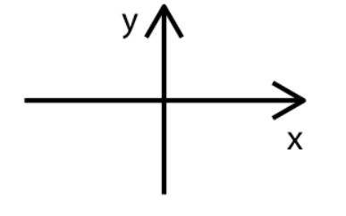
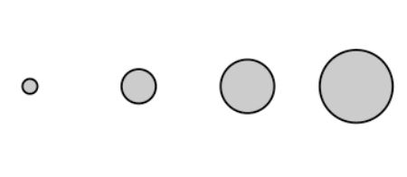
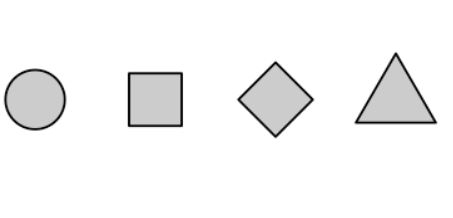
Die Aesthetics Linientyp, Linienbreite und Transparenz können als Spezialelemente von Form, Grösse und Farbe interpretiert werden.
Aesthetics werden in 2 Skalen unterteilt: solche die kontinuierliche Daten darstellen können und solche, die das nicht können (Wilke 2020, 8–9). Unter kontinuierlichen Daten werden alle Skalenniveaus, für die eine beliebige Anzahl an Zwischenausprägungen besteht, gefasst: beispielsweise eine Zeitdauer. Umgekehrt haben diskrete Daten eine begrenzte Anzahl an Ausprägungen, die nicht weiter abgestuft werden können. Es ist zum Beispiel nicht möglich, dass eine Familie 1.7 Kinder hat. Das Skalenniveau definiert die Art der Ausprägung (Werte) der gemessenen Dimensionen (Merkmale), die in einer Variable erfasst werden. Bei quantitativen Forschungsmethoden werden die Skalen sehr genau definiert, da das Skalenniveau die rechnerischen Operationen und die Vergleichsmöglichkeiten definiert (Diaz-Bone 2006, Kap. 2.1, 2.2; Field, Miles, und Field 2012, Kap. 1.5.1). Für die Anwendung der Aesthetics ist aber die Unterscheidung zwischen kontinuierlichen und diskreten Skalen entscheidend.
Tabelle 2: Variablentypen für Visualisierungen. Quelle: Wilke (2020), S. 9. Eigene Anpassungen.
Variablentyp
Skala
Beispiel
Beschreibung
Quantitativ/
numerisch
Kontinuierlich
1,3; 83; 1.5 x 10-2
Beliebige numerische Werte. Diese können ganze, rationale oder reelle Zahlen sein.
Quantitativ/
numerisch
Diskret
1, 2, 3, 4
Zahlen in diskreten Einheiten sind meistens ganze Zahlen. Ausnahmen: Bspw. die Werte 0.5, 1.0, 1.5 sind auch diskrete Werte, sofern im Datensatz keine dazwischen liegenden Werte existieren können.
Qualitativ/
nominal
Diskret
Hund, Katze, Fisch
Eindeutige Kategorien ohne feste Reihenfolge. Oft als Merkmale bezeichnet.
Qualitativ/
ordinal
Diskret
schlecht, angemessen, gut
Eindeutige Kategorien mit fester Reihenfolge. Oft als geordnete Merkmale bezeichnet.
Datum oder Zeit
Kontinuierlich oder diskret
5. Jan 2018, 08:03h
Spezifische Tage und/oder Zeiten. Allgemeine Datumsangaben ohne Jahr sind auch möglich (“4. Juli”). Das Format kann variieren.
Text
Keine oder diskret
Franz jagt im Taxi quer durch Bayern.
Freitext. Kann bei Bedarf als kategorisierbar behandelt werden.
Die Tabelle 3 zeigt die verschiedenen Variablentypen. Die Spalte Jahr ist ein diskreter Datumwert, da kein anderes Jahr in der Variable vorkommt. Gemeinde und Abfallart sind beides nominale (kategorische) Werte ohne logische Reihenfolge. Menge in Tonnen ist ein kontinuierlicher numerischer Wert.
Tabelle 3: Abfallart und -menge im Kanton Zürich. Quelle: Amt für Abfall, Wasser, Energie und Luft des Kantons Zürich (2022)%%% ANPASSEN biviz pkg %%%
Jahr
Gemeinde
Abfallart
Menge in Tonnen
2021
Aeugst a.A.
Brennbare Abfälle und Sperrgut
323
2021
Affoltern a.A.
Brennbare Abfälle und Sperrgut
2188
2021
Bonstetten
Brennbare Abfälle und Sperrgut
871
2021
Hausen a.A.
Brennbare Abfälle und Sperrgut
603
Für die Abbildung der Daten auf den Aesthetics wird angegeben, welche Datenwerte welchem Wert auf der Datenskala entsprechen. Das bedeutet, mithilfe der Skala erfolgt die eindeutige Zuordnung zwischen Daten und Aesthetics. Bei einem Diagramm mit einer x-Achse wird angegeben welcher Wert auf welcher Position auf dieser Achse dargestellt wird. Der gleichen Logik folgend, wird angegeben welche Grösse, Farbe oder Form ein Datenwert einnehmen soll. Anstatt eine Positionsskala wird eine Grössen-, Farben- oder Formskala verwendet. Ein Datenwert entspricht in jeder Skala einem eindeutigen Skalawert bzw. Aesthetic. Je Datenwert darf es nur einen Skalawert geben und umgekehrt. Eine eins zu eins Beziehung ist notwendig, damit die Datenvisualisierung nicht mehrdeutig wird (vgl. Kapitel 3.2).
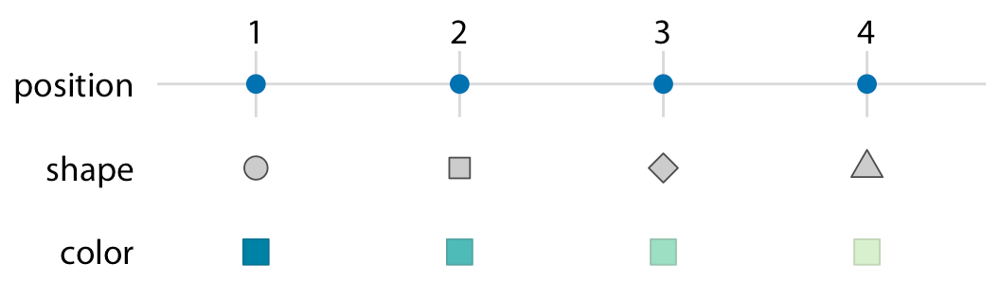
Abbildung 1: Skalen verknüpfen Datenwerte mit Aesthetics. Quelle: Wilke (2020), S. 10
Wenden wir diese Erkenntnisse beim Datensatz zum Abfall im Kanton Zürich an, dann erhalten wird folgendes Ergebnis: Auf der x-Achse werden die Gemeinden anhand der Positionsskala platziert. Die Variable hat keine logische Reihenfolge. Für die Unterstützung des lesens des Diagramms (Abbildung 2), sind die Gemeinden anhand der Menge an Abfall sortiert. Auf der Positionsskala y-Achse ist die Menge in Tonnen übertragen. Zusätzlich wurden die Gemeinden auf die Farbskala übertragen. Vor dem Hintergrund des Data Storytelling lässt sich die Frage stellen, ob die Verwendung des Aesthetic Farbe sinnvoll ist (vgl. Kapitel 2.2). Bei diesem Beispiel steht jedoch die Beziehung zwischen den Datenwerten und Aesthetics durch Skalen im Zentrum. Daher wurde für jede Gemeinde eine eigene Farbe verwendet.
Code
abfall_zh_sample |>filter( Gemeinde %in%c("Aeugst a.A.", "Affoltern a.A.", "Bonstetten", "Hausen a.A."), Abfallart =="Brennbare Abfälle und Sperrgut" ) |>plot_amounts_grouped(x =fct_reorder(Gemeinde, `Menge in Tonnen`),y =`Menge in Tonnen`, group = Gemeinde ) +# nicht notwendig, macht den plot aber etwas hübscherlabs(x ="Gemeinde") +theme(legend.position ="none")
Abbildung 2: Anzahl brennbare Abfälle und Sperrgut je Gemeinde im Jahr 2021. Eigene Darstellung.
Das kartesisches Koordinatensystem als Positionsskala
Bei der Abbildung 2 entspricht die Positionsskala einem kartesischen 2D-Koordinatensystem. Jeder Ort ist durch einen x- und y-Wert eindeutig markiert. Da die Achsen positive als auch negative Zahlen darstellen, muss der Zahlenbereich für jede Achse definiert werden. Bei diesem Beispiel verläuft die y-Achse von 0 bis 2297.4 (5% über dem höchsten y-Wert, welcher bei diesem Beispiel 2188 ist). Ist ein Datenwert innerhalb des definierten Zahlenbereichs, dann wird er im Diagramm an der entsprechenden Position abgebildet. Ansonsten wird der Wert verworfen und erscheint nicht im Diagramm (Wilke 2020, 13).
Abbildung 3: Die Anzahl Arbeitslose sind in tausend angegeben. Datenquelle: Teil des ggplot2 Pakets. Eigene Darstellung.
Beim kartesischen Koordinatensystem sind die Abstände zwischen den Gitterlinien der Achsen diskrete Schritte. Entlang einer Achse sind die Gitterlinien gleichmässig verteilt und entsprechen einer linearen Positionsskala. Dies gilt sowohl für die Dateneinheiten als auch in der Visualisierung. In allen drei Diagrammen der Abbildung 3 sind die Schritte auf der y-Achse 3000 je Gitterlinie und auf der x-Achse 10 Jahre. Der verwendete Raum um die diskreten Schritte abzubilden können aber unterschiedlich gross sein, womit unterschiedliche Botschaften vermittelt werden. Abbildung (a) betont die Veränderung auf der y-Achse und Abbildung (c) betont die Veränderung über die Zeit. Werden auf der x- und y-Achse die gleichen Einheiten verwendet, so sollten die Gitterabstände identische sein. So, dass der Abstand zwischen zwei Gitterlinien die gleiche Menge an Dateneinheiten beinhaltet (Wilke 2020, 14–15).
Neben linearen Achsen gibt es auch nichtlineare Skalen, welche meistens eine logarithmische Skala verwendet. Hier entspricht eine Einheit auf der Skala einer Multiplikation von einem festen Wert (Wilke 2020, 17). Bei Datenvisualisierungen werden auch Polarkoordinatensysteme verwendet, bei denen die Position durch den Winkel und radialen Abstand zum Ursprung angegeben wird (Wilke 2020, 22). Da bei dieser Arbeit ausser beim Donutdiagramm nur das lineare kartesische Koordinatensystem verwendet wird, stehen diese Systeme nicht im Fokus. Für eine Vertiefung der Thematik ist das Kapitel 3 aus Wilke (2020) zu Empfehlen.
Farbe als Steuerungsinstrument
Bei Datenvisualisierungen sind Farben ein wirkungsvolles Mittel um die Betrachtenden beim Lesen des Diagramms zu unterstützen und ihre Aufmerksamkeit zu lenken. Damit die Wirkung sich entfalten kann, muss die Anwendung von Farben selektiv und überlegt sein. Die Verwendung von Farbe sollte ein bewusster Entscheid mit einer strategischen Absicht sein. Welche Aspekte sollen die Aufmerksamkeit der Lesenden erhalten? Damit die Farben wirken, benötigt es einen Kontrast. Die Gitterlinien der bisherigen Grafiken sind alle in grau. Farben heben sich besser von grau als von blau ab, dadurch entsteht ein grösserer Kontrast zu den Farben, die für die Lenkung der Lesenden verwendet werden. Für die grösste Wirkung der Farben werden sie sparsam und konsistent eingesetzt. So wird gewährleistet, dass sie ihre präattentive Wirkung beibehalten. Ist alles unterschiedlich, dann kann auch nichts hervorstechen (Nussbaumer Knaflic 2017, 98–99). Unter präattentive Merkmale versteht Nussbaumer Knaflic Kennzeichnungen, die ein vorbewusste Wahrnehmung von Sinnesreizen stimulieren und effizent mit dem ikonischen Gedächtnis interagieren. Das ikonische Gedächtnis ist aktiviert, sobald wir etwas betrachten. Dabei nehmen wir seine Tätigkeit nicht bewusst wahr. Bereits nach einem Sekundenbruchteil wird das Signal ans Kurzzeitgedächtnis weitergeleitet. Hier werden die Informationen verarbeitet. Da das Kurzzeitgedächtnis nur eine begrenzte Kapazität hat, müssen beim Data Storytelling die Reize für das Gehirn bewusst gesteuert werden. Die kognitive Belastung für das Publikum soll möglichst gering sein, damit es die vermittelten Informationen aufnehmen kann. Das Kurzzeitgedächtnis kann in etwa vier Elemente visueller Informationen zeitgleich Verarbeiten. Indem Informationen als zusammenhängende visuelle Elemente dargestellt werden, wird die kognitive Belastung für das Publikum reduziert und besitzt dennoch eine hohe Informationsdichte. Präattentive Merkmale helfen die Aufmerksamkeit des Publikums zu steuern und eine visuelle Hierarchie in einem Diagramm zu schaffen. Neben Farben sind auch Formen, Grösse oder Positionen klassiche präattentive Merkmale (Nussbaumer Knaflic 2017, 83–86). Beispielsweise können wir dank der präattentiven Funktion der Farbe einfacher und schneller die Anzahl Dreien in einem Zahlenblock zählen Abbildung 4 (a) und Abbildung 4 (b).
Die korrekte Verwendung von Farbpaletten und ihre Wichtigkeit für die Kommunikation mit Datenvisualisierungen betrifft neben der Interpretation der Diagrammen auch die Berücksichtigung der Farbenblindheit (Hawkins 2015; Bartram, Patra, und Stone 2017). Die wichtigsten Aufgaben von Farben ist die Unterscheidung von Datengruppen (wie bei Abbildung 4 (b) ), das Darstellen von Datenwerten oder die Hervorhebung von Datenpunkte. Bei Abbildung 2 dient die Farbe als Unterscheidungsmerkmal der einzelnen Gemeinden. Bei der Anwendung von Farbe als Unterscheidungsmerkmal werden qualitative Farbskalen verwendet. Das heisst, die Anzahl Farben ist endlich, sie unterscheiden sich voneinander und sind gleichwertig zueinander. Folglich darf keine Farbe dominanter als die andere sein und der Eindruck einer Reihenfolge muss vermieden werden (Wilke 2020, 25–26). Die Okabe Ito Farbskala (Okabe und Ito 2008) ist eine bekannte Standardskala welche die beschriebenen Voraussetzungen erfüllt und Farbenblindheit berücksichtigt. Rund acht Prozent der Männer und ein halbes Prozent der Frauen sind farbenblind, wodurch sie Rottöne und Grüntöne nur schlecht unterscheiden können.1 Um positive und negative Punkte trotzdem mit Farben hervorzuheben wird oft blau für positive Werte und orange für negative Werte verwendet (Nussbaumer Knaflic 2017, 101–2). Um quantitative Datenwerte darzustellen werden sequenzielle Farbskalen verwendet, bei denen erkennbar ist, welcher Wert grösser oder kleiner ist. Damit abgeschätzt werden kann, wie weit zwei Werte voneinander entfernt sind, müssen sich die Farbabstuffungen gleichmässig über den gesamten Bereich verändern. Das ist sowohl mit einem einzelnen Farbton wie auch mit mehreren Farbtönen möglich. Werden quantitative Datenwerte relativ zu einem neutralen Mittelpunkt visualisiert, wird eine divergente Farbskala verwendet. Beispielsweise bei einer Variable mit positiven als auch negativen Werten (Wilke 2020, 27–28).
Abbildung 5: Das R Paket colorspace (Zeileis u. a. 2020) ist ein flexibles Werkzeug um eigene Farbpaletten zu erstellen (beispielsweise eine Okabe Ito Farbskala) oder auf bestehende Skalen zuzugreifen. Eigene Darstellung.
Wann ist der Einsatz von Farbe sinnvoll? Immer dann wenn sie dem Publikum das Lesen des Diagramms erleichtert. Farbe muss nicht unterhalten, sondern ein Signal senden. Verändert sich etwas in der Grafik oder gibt es einen wichtigen Punkt zu beachten? Dann muss das Publikum auf diesen Umstand aufmerksam gemacht werden. Das geht nur, wenn die Farben zurückhaltend und durchgehend sind, also nicht in jeder Visualisierung eine andere Farbe verwendet wird. Die kognitive Belastung reduziert sich, wenn die Bedeutung einer Farbe innerhalb eines Visualisierungsportfolio (beispielsweise in einem Paper oder in einer Präsentation) gleich bleibt (Nussbaumer Knaflic 2017, 100–101). Ansonsten besteht nicht nur die Gefahr, dass das Publikum verwirrt sondern gar aktiv in die Irre geführt wird (Borland und Taylor Ii 2007, 15).
Gestaltungsprizipien in Datenvisualisierungen
Die Aufnahme von Informationen ist für das Gehirn eine mentale Anstrengung. Die Gehirnkapazität des Publikums ist begrenzt, daher muss die kognitive Belastung bewusst und effektiv gestaltet sein. Das bedeutet, relevanten Informationen müssen mit möglichst geringer wahrgenommener kognitiver Belastung kommuniziert werden. Dafür müssen die Signale (die Informationen, die vermittelt werden) gestärkt und das Rauschen (Elemente die von der Information ablenken) reduziert werden. Das Diagramm soll eingänglich und einfach erscheinen. Komplizierte Grafiken können das Publikum abschrecken und ihre Aufmerksamkeit geht verloren. Die Gestaltprinzipien der visuellen Wahrnehmung helfen die Signale einer Grafik zu erkennen und Rauschen zu minimieren. Damit die Botschaft der präsentierten Daten einfach erkennbar ist (Nussbaumer Knaflic 2017, 61–63). Die Überlegungen und Grafiken zu den Gestaltprinzipien folgen den Ausführungen von Nussbaumer Knaflic (2017) im Kapitel Gestaltprinzipien der visuellen Wahrnehmung:
Abbildung 6: Das Gestaltprinzip der Nähe.
Durch die physische Nähe der Punkte, werden sie als zusammengehörig wahrgenommen. Dank der Anordnung und Nutzung von Zwischenräumen sehen die Augen Gruppen, Linien etc.. Bei den vertikalen Reihen ist der Weissraum (Zwischenräume) grösser zwischen den nebeneinander liegenden Punkten und bei den horizontalen Reihen zwischen den oberen und unteren Punkten.
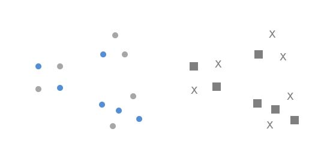
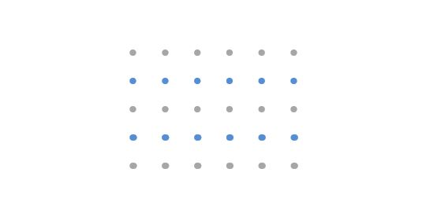
Abbildung 7: Das Gestaltprinzip der Ähnlichkeit.
Haben Objekte eine ähnliche Erscheinung (Form, Farbe, Grösse, etc) so stellt unser Gehirn eine Verbindung zwischen diesen Punkten her. Damit kann dem Publikum wichtige Interpretationshilfe geboten werden und die kognitive Belastung ist tief. Beispielsweise sehen wir durch die Färbung der Punkte in der zweiten Grafik Linien.
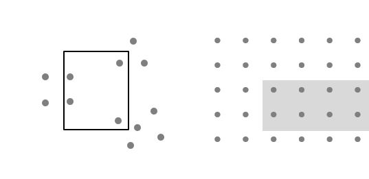
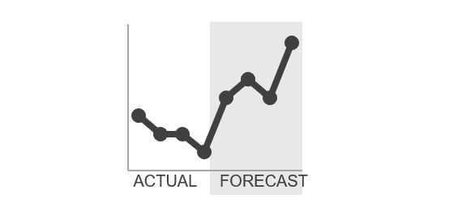
Abbildung 8: Das Gestaltprinzip der Umrandung
Durch einen Rahmen werden Teilemengen einfach als Gruppe identifiziert. Die Fläche kann schattiert oder klassisch mit Linien umrandet werden. Die Umrandung ist hilfreich zur Unterscheidung von unterschiedlichen (Daten-) Bereichen.
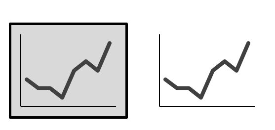
Abbildung 9: Das Gestaltprinzip der Form.
Unser Hirn neigt dazu, einzelne Elemente in einer Reihe wenn möglich als ein einzige Form wahrzunehmen. Trotz der Lücken in der Kreisform erkennt unser Gehirn einen Kreis, indem er die fehlenden Teile ausfüllt. Dazu muss das Konstrukt aber bekannt und eine einfach Darstellung sein. Dank dem Konzept der Form erkennen wir auch, die Zusammengehörigkeit einer Grafik ohne einen Rahmen. Gleichzeitig wird das Rauschen reduziert und die Daten hervorgehoben.
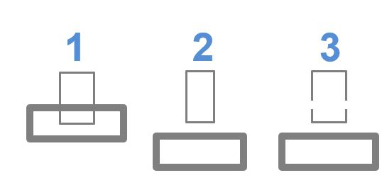
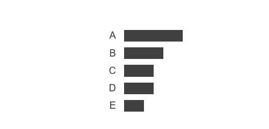
Abbildung 10: Das Gestaltprinzip der Kontinuität.
Unser Gehirn sucht in Objekten die Kontinuität und das Bekannte. Daher erwarten die meisten Menschen beim Auseinander nehmen des Bildes 1, das Bild 2, obwohl es genauso gut Bild 3 sein könnte (vgl. auch Kanizsa 1970). Im Balkendiagramm wird kein y-Achse benötigt, da unser Hirn die Linie selber zeichnet und erkennt, dass alle Balken am gleichen Punkt starten. Da die Distanz bzw. der Weissraum zwischen der Beschriftung (links) und den dargestellten Daten (rechtes) überall identisch ist, wird eine Linie signalisiert.
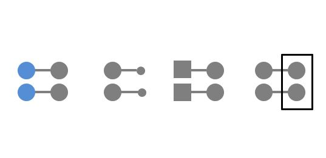
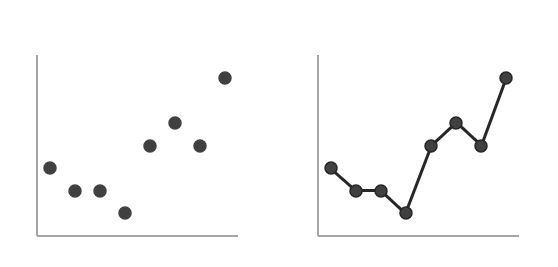
Abbildung 11: Das Gestaltprinzip der Verbindung.
Das Gestaltprinzip der Verbindung ist stärker als das Prinzip der Ähnlichkeit und schwächer als die Umrandung. Das heisst, die Zusammengehörigkeit von verbundenen Elemente ist stärker als die gleiche Farbe, Grösse oder Form. Eine Umrandung besitzt jedoch eine höhere visuelle Hirarchie als die Verbindung, wodurch die Objekte in einem Rahmen zusammengehörig wahrgenommen werden obwohl sie mit einem anderen Objekten verbunden sind. Verbindungen helfen, den Datenpunkten eine Ordnung zu geben und wird unter anderem bei Liniendiagrammen eingesetzt. Die meisten Liniendiagramme bestehen aus einzelnen Datenpunkten, welche erst dank dem Gestaltprinzip der Verbindung als Kontinuum erkennbar sind.
Mit Daten Geschichten erzählen
Die Vermittlung von Analysen ist üblicherweise der einzige Teil, welcher das Publikum zu sehen bekommt von einer Datenanalyse. Folglich sollte dieser Schritt möglichst erfolgreich und nachhaltig gestaltet sein. Damit das erreicht wird, muss der Wechsel von der erforschenden Analyse zur erklärenden Analyse erfolgen. Die erforschende Analyse ist der Prozess, welcher zu neuem Verständnis und neuen Erkenntnissen führt. Bei der Vermittlung der Resultate kann aber nicht der gesamte analytische Prozess wiedergeben werden, daher ist es wichtig einen erklärenden Ansatz anzuwenden. Hier wird eine bestimmte Erkenntnis erklärt und analysiert, die für das Publikum und die gegebene Situation wichtig ist (Nussbaumer Knaflic 2017, 17).
Tabelle 4: Die zwei Arten der Analyse. Quelle: Dykes (2020), S. 138. Eigene Anpassungen.
erforschende Analyse
erklärende Analyse
Ziel
Verstehen
Kommunizieren
Publikum
Analyst:in (sich selbst)
andere Personen
Vertrautheit des Publikums mit den Daten
Sehr vertraut
Nicht bis wenige vertraut
Fokus der Visualisierung
Flexibel und schnell
Einfach, klar und schlüssig
Erzählung
Unbekannt
Bekannt
Resultat
Insight (Verständnis & Erkenntnis)
Aktion
In der Forschung ist die erklärende Position die Beantwortung der Forschungsfrage und im geschäftlichen Umfeld beispielsweise die Erklärung, weshalb der Pendenzenstand im Team A zugenommen hat. Um die Fragen zu beantworten, werden eine Vielzahl von erforschenden Analysen durchgeführt, aber nur einige wenige geben Informationen um die Fragestellung zu beantworten. Auf diese Informationen wird bei der erklärenden Analyse eingegangen. Damit die Argumente überzeugen und die Erkenntnisse in Erinnerung bleiben, wird eine packende Geschichte benötigt. Die Erzählung einer Geschichte hilft, die gewonnen Fakten aus der erforschenden Analyse bei der erklärenden Analyse dem Publikum interessant und nachvollziehbar zu präsentieren. Damit das möglich ist, muss der Kontext eruiert werden. Wer ist das Publikum und in welcher Rolle stehe ich zum Zielpublikum? Je nach Situation muss eine andere Kommunikation gewählt werden, damit die Geschichte ihr Ziel erreicht. Was soll das Publikum wissen? Erkennen was für das Publikum spannend und relevant ist. Hier wir die Handlung der Geschichte definiert. Dabei muss immer die Frage beantwortet werden, weshalb soll sich das Publikum für die Geschichte interessieren. Wie kann die Frage beantwortet werden? Bei diesem Schritt werden die Daten ausgewählt, welche die Geschichte untermauern und plausibilisieren (Nussbaumer Knaflic 2017, 18–23).
Was aber ist eine Geschichte? Bei einer Geschichte werden Beobachtungen, Erkenntnisse und Ereignisse in eine bestimmte Reihenfolge gebracht, mit dem Ziel beim Publikum eine emotionale Wirkung zu erzielen. Durch den Aufbau einer Spannung am Anfang und der Lösung am Ende der Geschichte wird das Publikum gefesselt, was eine emotionale Reaktion auslöst (Wilke 2020, 304). Neben der Wiederholung ist die emotionale Wirkung der Geschichte durch den Spannungsbogen wichtig, damit sie in unserem Gedächtnis bleibt. Es gibt eine Vielzahl von narrativen Strukturen und Methoden des Storytellings, sei es im Theater, im Film oder bei Texten. Eine einfache Methode für das Data Storytelling ist das Muster Anfang-Mitte-Ende, welches dem klassischen Narrativ eines Forschungspaper (Einleitung-Hauptteil-Schlussfolgerung) gleicht. Am Anfang wir die Handlung eingeführt und eine Auslegeordnung gemacht, damit das Publikum erkennt, weshalb die Geschichte wichtig für sie ist. Was ist der Kontext, welches sind die Schlüsselpunkte, was ist das Problem und was ist die gewünschte Lösung? In der Mitte muss das Publikum von einem Sachstand überzeugt werden. Deshalb steht das wie der Problemlösung im Zentrum. Dafür wird das Thema in seinen Details (Hintergrundinformationen, Vergleiche, Szenarien, mögliche Problemlösungen) dargestellt. Am Ende wird auf die Ausgangslage Bezug genommen und eine Handlungsempfehlung abgegeben. Über den ganzen Prozess hinweg steht immer das Publikum im Mittelpunkt: Warum ist es relevant für sie? Was stösst auf Resonanz und motiviert? Dabei steht jedes Mal der gleiche Inhalt zur Debatte, lediglich aus unterschiedlichen Perspektiven (Einführen, Details, Zusammenfassen) (Nussbaumer Knaflic 2017, 146–49).
Bei der Integration von Datenvisualisierungen in Geschichte müssen gewisse Punkte berücksichtigt werden. Erstens kann eine einzelne Visualisierung keine ganze Geschichte erzählen. Damit mit Visualisierung eine Geschichte erzählt werden kann, benötigt es mehrere Diagramme. Je Station des Storytellings benötigt es in der Regel mindestens eine Grafik. Sowenig in Textform der Anfang, die Mitte und das Ende einer Geschichte in einem Satz sinnvoll dargelegt werden kann, kann dies auch keine Visualisierung erreichen (Wilke 2020, 305). Damit die Visualisierung (Form) den gewünschten Effekt (Funktion) auslöst, muss die Form (Visualisierung) der Funktion (Effekt) folgen. Das heisst, die Visualisierung soll etwas auslösen, damit das funktioniert, benötigt sie eine vorher definierte Funktion (Was soll die Grafik machen?). Um die Funktion des Diagramms zu zeigen, muss dem Publikum gezeigt werden, wie es mit der Darstellung umgehen soll. Die wichtigste Methode dafür ist bei der Datenvisualisierung die Verwendung von Farben (vgl. Kapitel 2.2). Damit die Hervorhebung seine Wirkung entfalten kann, ist es wichtig sparsam mit diesem Tool umzugehen (Nussbaumer Knaflic 2017, 107–9). Zudem muss die Visualisierung zugänglich sein. Nicht das Publikum ist verantwortlich, dass es die Grafik versteht sondern die Autorschaft. Das wird erreicht durch ein verständliches Design (keine unnötige Komplexität), Lesbarkeit (Schriftart und Grösse), Klarheit (wichtiges wird hervorgehoben) und einfache Sprache (Publikum angepasst). Das Publikum muss durch das Diagramm geführt werden, dazu sind Titel, Achsenbeschriftungen und direkte Annotationen notwendig (Nussbaumer Knaflic 2017, 118–19). Werden alle diese Punkte berücksichtige und alle Elemente folgen einer visuellen Ordnung, dann hat das Diagramm eine ansprechende Ästhetik, wodurch das Vertrauen des Publikums gewonnen wird [Nussbaumer Knaflic (2017), S. 68; S. 123].
Vorgehen Methode
Tidy Data als Basis von Datenvisualisierungen
Für die effiziente Anwendung von Datenvisualisierungen müssen die Daten als Tidy Data(H. Wickham 2014) aufbereitet sein. Folgende Kriterien müssen gemäss Wickham (2014, 4) erfüllt sein, damit ein Datensatz dem Grundsatz Tidy Data entspricht:
Jede Variable hat eine eigene Spalte.
Jede Beobachtung hat eine eigene Zeile.
Jeder Wert hat eine eigene Zelle.
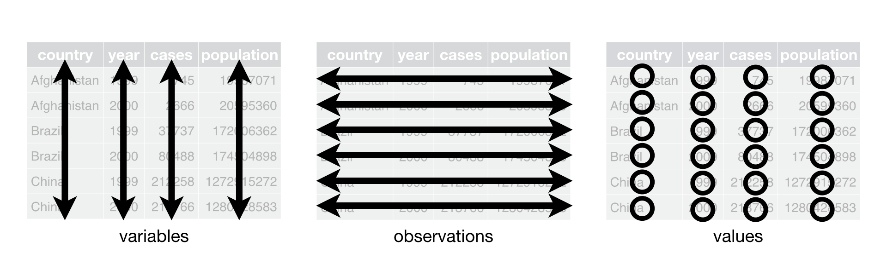
Abbildung 12: Bei einem tidy Datenset sind Variablen in Spalten, Beobachtungen in Zeilen und Werte in Zellen gespeichert. Quelle: H. Wickham und Grolemund (2016), S. 149.
Die Standardisierung der Organisation von Datenwerten in einem Datensatz vereinfacht die Datenanalyse. Die Datenstruktur (Zweidimensionale Tabelle mit Spalten und Zeilen) wird beim Tidy Data Ansatz mit einer Semantik (Variablen, Beobachtungen, Werte) verknüpft. Es ist nicht immer einfach herauszufinden, was Beobachtungen und was Variablen sind. Um die Variablen und Beobachtungen für eine Datenanalyse herauszufinden, gilt der Grundsatz: Beziehungen lassen sich einfacher zwischen Variablen beschreiben und Vergleiche zwischen Gruppen von Beobachtungen (H. Wickham 2014, 3–4).
Abbildung 13: Ordnung durch Tidy Data. Quelle: Lowndes und Horst (2020)
Abgesehen, dass mit Tidy Data eine konsistente Methode für die Datenspeicherung verwendet wird, kann R die Vorteile einer vektorisierten Programmiersprache so optimal ausschöpfen (H. Wickham und Grolemund 2016, 150). Vektorisiert bedeutet, dass eine Funktion einen Vektor mit Werten als Input nimmt und einen Vektor mit der gleichen Anzahl an Werten als Output retourniert (H. Wickham und Grolemund 2016, 56). Tidy Data entspricht einem langen Datenformat. Dadurch entsteht eine Redundanz an Werten, was bei der Speicherung von Daten nicht gewünscht ist, aber die Datenanalyse vereinfacht (Healy 2018, 56).
Die Beziehung von Daten und Visualiserungen mit “Grammer of Graphics”
Die Datenvisualisierungen im entwickelten Paket {biviz} basieren auf dem Paket {ggplot2}(H. Wickham 2016), welches den Ansatz The Grammar of Graphics(Wilkinson 2005) verfolgt und vektorisiert ist. Durch die Grammer of Graphics werden Beziehungen zwischen den Daten und ihrer grafischen Darstellung ausgedrückt und bietet eine einheitliche Möglichkeit Visualisierungen zu erstellen. In der Theorie folgt die Grammer of Graphics sieben Schritten zur Erstellung einer Grafik. Daten werden Variablen zugeordnet. Anschliessend durchlaufen die Variablen drei mögliche Transformationsschritte (Algebra, Skalen, Statistik). Danach werden die transformierten Variablen einem geometrischen Objekt übergeben, damit die Daten eine Form erhalten. Im nächsten Schritt wird das Objekt in einem Koordinatensystem positioniert. Zum Schluss wird ein visuell wahrnehmbares Objekt erstellt, das Grafik heisst (Wilkinson 2012, 376–77). Diese strukturierte Beziehung zwischen den Datenvariablen und deren Repräsentation in einer Grafik macht sich das Paket {ggplot2} zu eigen um Diagramme zu erstellen. Dazu werden zuerst die Daten definiert, anschliessend wird das visuelle Element gewählt und am Ende werden die Details einer Visualisierung angepasst. Das heisst, ein Code mit {ggplot2} folgt bei der Erstellung einer Grafik einer logischen Struktur. Es werden Verbindungen zwischen den Datenvariablen und den Skalen der grafischen Elementen (Farbe, Form, Position, Grösse) einer Visualisierung hergestellt. Diese Verbindungen heissen aesthetics (vgl. Kapitel 2). Am Ende des Datenvisualisierungsprozess wird diese Verbindung in eine Grafik umgewandelt. Damit eine solche Verbindung entstehen kann, werden in der Funktion ggplot() die Daten sowie die Beziehung zwischen den Datenvariablen und dem mapping auf die aesthetics definiert. Anschliessend wird dem Programm gesagt, welcher Diagrammtyp (Balkendiagramm, Streudiagramm, etc.) dargestellt werden soll. Diagrammtypen werden anhand der geom definiert. Mit dem geom wird gesagt, welches geometrische Objekt (Balken, Punkte, etc.) für das Diagramm benutzt wird. Das heisst Balkendiagramme werden mit geom_bar() oder Streudiagramme mit geom_point() erzeugt. Diese Abfolge von Code reicht, damit {ggplot2} eine Grafik erstellen kann. Um mehr Details der Grafik, wie Achsen, Skalen oder Beschriftungen zu kontrollieren, werden weitere Codestücke hinzugefügt. Dafür wird die gleiche Logik wie beim Definieren der Diagrammtypen benutzt (Healy 2018, 54–56). Viele Schritte der Grammer of Graphics haben bei {ggplot2} abhängig von den Daten und dem gewählten geom eine Voreinstellung, beispielsweise bei den Transformationsschritten und dem Koordinatensystem. Die Einstellungen können aber manuell angepasst werden. Jeder Teilaspekt hat eine eigene Funktion, welche Argumente besitzt, die spezifizieren was an der Grafik angepasst wird.
Durch die Zerstückelung der einzelnen Schritte der Erstellung einer Datenvisualisierung, kann systematisch Stück für Stück eine individuelle Grafik erstellt werden. Dabei basieren die unterschiedlichen Grafiktypen immer auf den oben beschriebenen Grundspezifikationen. Am Ende besteht ein Diagramm immer aus einer Kombination von drei Quellen: 1. Daten, dessen Datenwerte durch das geom dargestellt werden. 2. Skalen und Koordinatensystem um die Daten in eine Grafik abzubilden. 3. Erläuterungen wie Labels oder Titel damit die Grafik interpretierbar wird (H. Wickham 2010, 4–5).
Die Umsetzung in {ggplot2} folgt immer dem gleichen Konzept (Healy 2018, 60):
Wahl des geometrischen Objekts. Es sind mehrere Layer möglich. Die aesthetics können je geom in der geom_*() Funktion angepasst werden.
## Step 3: Geomplot <- plot +geom_bar()plot
Kontrolle von Details im Diagramm inkl. Koordinatensystem. Default ist das kartesische Koordinatensystem (Wilke 2020, 13).
## Step 4: Detailsplot <- plot +scale_y_continuous(expand =c(0, NA)) +labs(title ="SUVs sind die grösste Gruppe von Fahrzeugtypen",x ="Autotyp",y ="Anzahl" ) + cowplot::theme_minimal_hgrid()plot
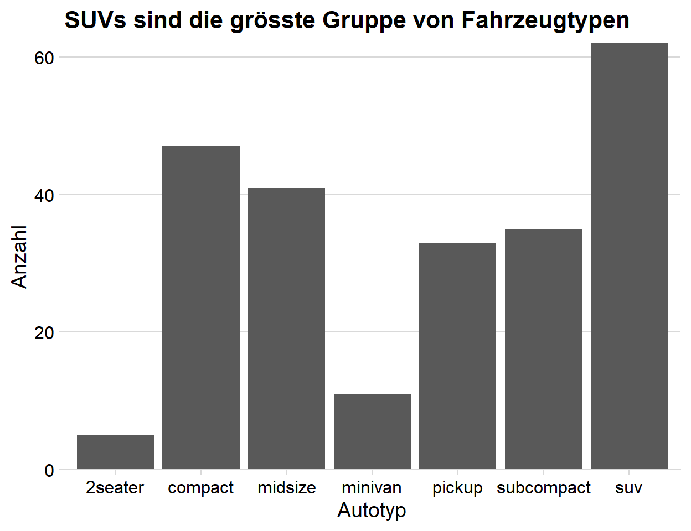
R-Paket Entwicklung
Struktur im Prozess
Zu Beginn des Entwicklungsprozesses standen organisatorische Entscheide im Fokus. Zum einen musste die Ordnerstruktur des Pakets bestimmt und zum anderen eine Strategie für die Benennung der Funktionen definiert werden. Beide Aspekte helfen eine Struktur im Paket zu etablieren. Die Ordnerstruktur im {biviz} Paket folgt der Empfehlung von Bannert (Bannert 2022, Kap. 3.2.5):
R
Hier werden die Skripts der Funktionen gespeichert. Die einzelne Funktionen des Pakets werden thematisch in einer Datei zusammengefasst. Dank dem Paket {roxygen2}(H. Wickham, Danenberg, u. a. 2022a) kann die Dokumentation der Funktionen gleich im selben Skript wie die Funktionen geschrieben werden. Mit dem Paket {devtools}(H. Wickham, Hester, u. a. 2022a) werden automatisch alle relevanten Dateien für die Dokumentation erzeugt. {devtools} erstellt diesen Ordner automatisch.
man
In diesen Ordner wird im Normalfall die automatisch erzeugte Dokumentation abgespeichert und beinhaltet die Funktion- und Datendokumentationen. Diese Dokumentationen werden bei der Anwendung des Pakets mithilfe ?function_name oder help(function_name) aufgerufen. {devtools} erstellt diesen Ordner automatisch.
data
Damit der Bezug der Daten relativ bleibt, werden sie in einem separaten Ordner abgespeichert. Der relative Bezug auf Daten und Funktionen (R) ist wichtig, damit andere Nutzende das Programm einfach verwenden können und der Pfad nicht aufgrund der persönlichen Ordnerstruktur gebrochen wird. Weitere Details zu relativen Datenpfaden hat Jenny Bryan ein einem Blogpost dargestellt (Bryan 2017).
inst
R Pakete werden in der Regel mit install.packages() installiert und werden irgendwo auf dem Computer auf dem R verwendet wird abgespeichert. Sollen Dateien, welche nicht direkt in Zusammenhang mit dem Paket stehen mitgeliefert werden, dann ist der inst Ordner ein guter Ort dafür. Der Ordner wird im Stammordner des installierten Pakets gespeichert und bleibt so immer in Bezug zum Paket. Der Ordner bietet auch Platz für Sandboxes oder um mit neuen Funktionen zu experimentieren.
Neben der Ordnerstruktur ist für die stringente Entwicklung und anschliessende Nutzung des Pakets eine einheitliche Syntax wichtig. Für {biviz} wird der snake_case Ansatz verwendet. Beim snake_case werden alle Begriffe in Kleinbuchstaben oder Zahlen verwendet und mit einem Unterstrich (_) verbunden. Neben der Darstellung ist auch der Inhalt wichtig. Gute Namen können bereits eine Form der Dokumentation sein und entsprechend beschreiben was sie repräsentieren. Als Faustregel gilt: Variablen sind Nomen und beschreiben was sie sind (abfallart). Funktionen sind Verben und beschreiben was sie machen (plot_amounts_grouped). (H. Wickham 2022) Es hilft sich in Erinnerung zu rufen, dass der Code auch von Menschen gelesen und verstanden werden muss. Für den Computer ist es nicht relevant ob function1() oder compute_max() steht. Für einen Menschen ist es jedoch ein grosser Unterschied und macht den Code verständlicher. Entsprechend soll der Code für Menschen einfach und verständlich gehalten werden.
Tidy evaluation
Im Tidyverse Ecosystem wird Tidy evaluation verwendet, was eine Spezialform des non-standard evaluation ist (mehr Details zu non-standard evaluation (H. Wickham 2019, Abschnitt Metaprogramming)). Für das Paket {biviz} wurde das data masking und tidy selection angewendet. Mit dem data-masking können Variablen in bestimmten Funktionen so verwendet werden, als ob sie in der Programmierumgebung bzw. Funktionsumgebung sind. Es reicht dann variable_x zu verwenden anstatt df$variable_x. Mit data-masking verschwimmt die Abgrenzung zwischen env-variables (Variablen fürs Programmieren, welche in R mit <- erstellt werden und Objekte sind) und data-variables (Statistische Variablen, welche in Datentabellen gespeichert sind) (H. Wickham, François, u. a. 2022). Vereinfacht gesagt, wird durch das data-masking die spezifisch aufgerufene env-variable (im Normalfall eine Datentabelle) zur Programmierumgebung und die data-variable zur env-variable während dem Aufruf der Funktion.
# A tibble: 3 × 2
variable_x variable_y
<dbl> <chr>
1 1 a
2 1 b
3 3 c
## data-variabledf$variable_x
[1] 1 1 3
## ohne tidy evaluationdf[df$variable_x ==1& df$variable_y =="a", ]
# A tibble: 1 × 2
variable_x variable_y
<dbl> <chr>
1 1 a
## mit tidy evaluationfilter(df, variable_x ==1& variable_y =="a")
# A tibble: 1 × 2
variable_x variable_y
<dbl> <chr>
1 1 a
Das tidy evaluation Konzept vereinfacht die interaktive Datenanalyse. Beim Programmieren mit Tools die data-masking benutzen gilt es jedoch gewisse Herausforderungen zu meistern. Beim Schreiben von eigenen Funktionen mit data-variables müssen sie im Code speziell mit {{ variable_x }} (“{{” wird auch curly-curly genannt) aufgerufen werden. Ohne die Einschliessung in {{ sucht R in der Funktionsumgebung bzw. Programmierumgebung nach einer env-variable “variable_x” und findet sie nicht, da variable_x eine data-variable ist, welche eine Spalte im df (env-variable) ist. {{ ist ein Weiterleitungsoperator, wodurch Funktionen mit data-masking welche in der selber geschriebenen Funktion verwendet werden ihr Verhalten in die neue Umgebung mitnehmen (Henry und Wickham 2022b, 2022a).
Beim tidy-selection können in gewissen Funktionen auf die Variablen anhand ihres Namens, Typs oder Position zugegriffen werden. Tidy-selection folgt den gleichen Prinzipien wie data-masking. Folglich gelten die gleichen Regeln wie oben beim data-masking beschrieben (H. Wickham, François, u. a. 2022).
Workflow für die Entwickung von Paketen in R
Wie für viele andere Aufgaben gibt es in R Pakete, welche die Entwicklung von eigenen Paketen unterstützen. Diese Pakete werden im {devtools} (H. Wickham, Hester, u. a. 2022b) zusammengefasst. Nach dem das Paket devtools installiert und geladen ist, kann der Entwicklungsprozess beginnen. Der hier beschriebene Ablauf orientiert sich am Kapitel The Whole Game der zweiten Edition des Buches R Packages (H. Wickham 2015a; J. Wickham Hadley und Bryan 2022) und wird beispielhaft am Toypaket {dogorcat} durchgespielt. Die zweite Edition ist noch nicht veröffentlicht, die work-in-progress Version steht jedoch online zur Verfügung. In den folgenden Schritten werden die Funktionsaufrufe mit Angabe des spezifischen Pakets angegeben, damit die Herkunft der Funktionen ersichtlich ist.
Schritt 1: Initiierung des Pakets
Als erstes wird mit usethis::create_package("dogorcat") im derzeitigen Arbeitsverzeichnis das Paket erstellen. Alternativ kann auch ein spezifischer Ordner verwendet werden usethis::create_package("C:/Users/Andriu/Documents/dogorcat"). Mit usethis::use_git() und usethis::use_github() oder via Tools > Version Control kann ein Git repository sowie die Verbindung zum GitHub repository erstellt werden.
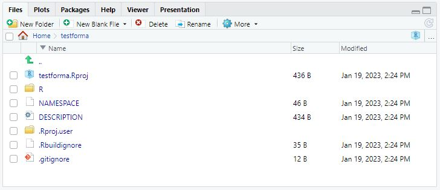
Initiierung des Pakets.
Schritt 2: Funktionen schreiben
Nach der Initiierung des Pakets können Funktionen geschrieben werden. Zuerst wird mit usethis::use_r("dog_or_cat") (kann später auch verwendet werden um das Skript zu öffnen) ein Skriptfile im Ordner R abgespeichert. Dieser Schritt kann natürlich auch manuell erfolgen. Anschliessend wird die Funktion geschrieben. Die Funktionen im {biviz} sind als Familien organisiert. Das heisst, je Thema – beispielsweise Proportions – gibt es eine Datei in der der Quellcode und die Dokumentation von mehreren Funktionen zusammen leben. Der Code kann direkt in der Funktion mit # dokumentiert werden. Wichtig beim Dokumentieren des Codes ist das Warum. Warum mache ich das so, wie ich es mache? Für weitere Details zum Schreiben von Funktionen eignet sich das Kapitel Functions are for Humans and Computers im Buch R for Data Science (H. Wickham und Grolemund 2016).
dog_or_cat <-function(favorite) {# eine fehlerhafte eingabe soll so früh wie möglich erkannt werdenstopifnot("Das Argument 'favorite' muss ein String sein."=is.character(favorite), "Kein anderes Haustier möglich. Wähle Dog oder Cat."= favorite =="dog"| favorite =="cat")ifelse(favorite =="cat", "Miauu!", "Woof, woof!")}
Mit devtools::load_all() (“Ctrl + Shift + L” oder Build > Load All) kann anschliessend das Paket geladen werden und die Funktion steht zur Verfügung.
dog_or_cat("dog")
[1] "Woof, woof!"
Mit devtools::check() (“Ctrl + Shift + E” oder Build > Check Package) wird ein R CMD check aufgerufen, welcher prüft ob das Paket funktionsfähig ist. Es ist zu empfehlen devtools::check() regelmässig auszuführen, damit frühzeitig Fehler entdeckt und behoben werden können. Beispielsweise nach dem Schreiben einer neuen Funktion.
Schritt 3: Dokumentation
Als erstes werden die Metadaten für das Paket erfasst. Dazu wird das File DESCRIPTION geöffnet und die relevanten Daten (Paketname, Autor, Licence, etc.) erfasst. Die Lizenz wird am einfachsten mit einem Shortcut wie usethis::use_mit_licences() ausgefüllt.
Anschliessend wird eine Dokumentation für die Funktion erstellt. Dazu wird das Paket {roxygen2} (H. Wickham, Danenberg, u. a. 2022b) verwendet. Im Skript mit der Funktion wird der Cursor in der Funktion dog_or_cat platziert und via Code > Insert Roxygen Skeleton das Template aufgerufen. Anschliessend können alle Punkte bearbeitet werden.
#' Title#'#' @param favorite #'#' @return #' @export#'#' @examplesdog_or_cat <-function(favorite) {# eine fehlerhafte eingabe soll so früh wie möglich erkennt werdenstopifnot("Das Argument 'favorite' muss ein String sein."=is.character(favorite), "Kein anderes Haustier möglich. Wähle Dog oder Cat."= favorite =="dog"| favorite =="cat")ifelse(favorite =="cat", "Miauu!", "Woof, woof!")}
Nun soll der Dokumentationsteil noch als separate Datei im Ordner man gespeichert werde, damit es später mit ?dog_or_cat oder help("dog_or_cat") zur Verfügung steht. Mit devtools::document() (“Ctrl + Shift + D” oder Build > Document) wird in man die Datei dog_or_cat.Rd erstellt.
Die Verwendung von Funktionen aus anderen Paketen muss ebenfalls dokumentiert werden. Dazu wird mit usethis::use_package("pkgname") das Paket in DESCRIPTION als Import angegeben und mit @importFrom in der Dokumentation vermerkt. Alternativ kann auch die Funktion mit pkgname::functionname aufgerufen werden, wodurch das @importFrom hinfällig ist.
#' Liebliengshaustier eruieren#'#' @param favorite #'#' @return Ein character (string) Vektor.#' @export#' #' @importFrom dplyr#' if_else#'#' @examples#' dog <- tidy_dog_or_cat("dog")#' dogtidy_dog_or_cat <-function(favorite) {# eine fehlerhafte eingabe soll so früh wie möglich erkennt werdenstopifnot("Das Argument 'favorite' muss ein String sein."=is.character(favorite),"Kein anderes Haustier möglich. Wähle Dog oder Cat."= favorite =="dog"| favorite =="cat")if_else(favorite =="cat", "Miauu!", "Woof, woof!")}
Als letztes wird noch ein README für GitHub benötigt. Hier werden der Zweck des Pakets, die Installationsanweisungen und einen kleinen Einblick in die Anwendung des Pakets gegeben. Natürlich können noch weitere Punkte ins README gepackt werden. Am einfachsten wird mit devtools::use_readme_rmd() ein RMakrdown Dokument erstellt, so kann die Seite in gewohnter Umgebung geschrieben werden. Anschliessend wir mit devtools::build_readme() das README.mdfür GitHub erstellt. Das README ist die Homepage und unterstützt beim Einstieg ins Paket. Später kann auch eine eigene Website erstellt werden.
Schritt 4: Testen
Das Testen der Funktionen ist ein wichtiger Teil der Paketentwicklung. Es ist so wichtig, dass es sich ab einer gewisse Relevanz (Anzahl Funktionen, Anzahl Nutzende, etc.) lohnt die Test zu formalisieren. Mit {testthat} (H. Wickham 2011) liefert das Paket {devtools} ein Framework, welches das Schreiben von Tests unterstützt. Für das Testen von grafischen Outputs wir zusätzlich noch das Paket {vdiffr} (Henry u. a. 2023) benötigt. Beim Unit Test wird die erwartete Ausgabe eines Codes festgehalten und mit dem tatsächlichen Wert verglichen. Dieser Prozess läuft automatisch auf der Basis von Code. Beim Snaphot testing wird eine Datei erstellt, die von einem Menschen lesbar ist. Bei Datenvisualisierungen – wie im Paket {biviz} – wird das Snaphot testing angewendet. Hier wird ein Bildfile mit der erwarteten Darstellung erstellt. Beim Testen wird anschliessend mit der erwarteten Darstellung abgeglichen. Snapshots test für Grafiken sind anfällig. Aus diesem Grund und da {biviz} noch in der Entwicklungsphase ist, werden die Test bei {biviz} noch informell, also manuell gemacht. Ausgenommen davon sind die standardisierten R CMD checks wie in Kapitel 5.2 beschrieben. Beim nächsten Entwicklungsschritt, sollen die Tests wie oben beschrieben formalisiert werden.
Schritt 5: Installieren
Vor dem Installieren des Pakets wird nochmals mit devtools::check() alles geprüft und anschliessend mit devtools::install() (oder von GitHub mit devtools::install_github()) installiert. Danach wird das Paket wie alle Pakete mit base::library() verwendet.
Die effektive Entwicklung von Paketen geschieht in den Schritten zwei bis vier. Die Anwendung und Reihenfolge dieser Schritte ist dabei dynamisch.
(README) Verwendung von {biviz}
Mit {biviz} können häufig verwendete Datenvisualisierungen mit einfachen Funktionen erstellt werden. {biviz} stellt insbesondere Datenvisualisierungen, die oft im Bereich Business Intelligence (BI) verwendet werden, zur Verfügung. Das Paket implementiert Trends der Datenvisualisierung, wodurch sich das Paket auch für andere Zwecke eignet. In {biviz} werden {ggplot2} Wrapper zur Verfügung gestellt, welche die gängigen Datenvisualisierungen erzeugen. Dies hat den Vorteil, dass bei Standardgrafiken die Datenvisualisierung nicht Schicht für Schicht programmiert wird, wie es beim {ggplot2} Framework vorgesehen ist. Eine Zeile Code reicht um eine Datenvisualisierung zu erstellen. Da das Paket auf {ggplot2} aufbaut, kann das erzeugte Objekt zu einem späteren Zeitpunkt dennoch angepasst werden. Um die Wrapper schlank zu halten, werden bei den meisten Funktionen in {biviz} die Daten vor der Übergabe in die Funktion so aufbereitet, dass in der Visualisierung die Datenpunkte in den Daten abgebildet werden und keine Berechnungen innerhalb der Visualisierungsfunktion vorgenommen werden.
Datenvisualisierungsfamilien
Die Visualisierungen sind in 4 Gruppen (amounts, distributions, proportions und time series) aufgeteilt und folgen immer der gleichen Syntax. Jede Funktion startet mit plot_*() anschliessend wird die Gruppe definiert plot_amounts_*() und am Ende die Form plot_amounts_grouped().
In der Gruppe amounts sind Datenvisualisierungen zusammengefasst, die Mengen abbilden. Dabei werden die Zahlenwerte von Kategorien bzw. deren Anzahl in einer Variable dargestellt. Die Kategorien können zusätzlich auch einer Gruppe zugeordnet werden. Dazu werden Variablen verwendet, welche die Gruppenzugehörigkeit definieren.
Bei distributions werden Verteilungen innerhalb einer Variable dargestellt. Dazu können unterschiedliche Methoden verwendet werden, welche je nach Ausgangslage unterschiedliche Vorteile mit sich bringen. Bei den Datenvisualisierungen zu Verteilungen lohnt es sich verschiedene Grafiken auszuprobieren und ein möglichst akkurates Bild der Daten zu erhalten. Die Funktion plot_distributions_raincloud() verfolgt beispielsweise das Ziel, einen gesamthaften Überblick (inkl. Rohdaten) zu präsentieren. Dies passiert indem verschiedene Layers (Boxplot-, Violin- und Punktediagramm) übereinander gelegt werden. Bei grossen Datenmengen gibt es jedoch so viele Datenpunkte, dass das Punktediagramm keinen Mehrwert mehr liefert. Deshalb bietet die Funktion plot_distributions_boxplot() eine Alternative. Die Diskussion rund um statistisch robusteren und transparenten Ansätzen zur Datenvisualisierung ist ein Disziplin übergreifendes Thema (vgl. Allen u. a. 2021; Hehman und Xie 2021).
Für proportions gibt es unterschiedliche Formen der Darstellung, welche verschiedene Vorteile haben. Bei gestapelte Balken oder Donutplots ist es klar ersichtlich, dass es Teilmengen eines Ganzen sind. Nebeneinander angeordnete Balken zeigen den relativen Unterschied besser und eignen sich auch für viele Teilmengen. Werden die Proportionen von verschiedenen Variablen untersucht, dann eignen sich wiederum gestapelte Balken. Durch Visualisierungssysteme wie {ggplot2} lassen sich Proportionen separat als Teil der Gesamtmenge darstellen. Mit plot_proportions_sidebyside_density1() werden zwei Probleme gelöst: Erstens ist das Verhältnis zur Gesamtmenge ersichtlich (im Gegensatz zum Balkendiagramm) und zweitens hat jede Teilmenge eine Grundlinie wodurch die Mengen einfach verglichen werden können (im Gegensatz zu gestapelten Balkendiagrammen). Mit plot_proportions_sidebyside_density2() kann der relativen Anteil zu einem bestimmten Zeitpunkt einfach bestimmt werden (Nussbaumer Knaflic 2017, 47; Wilke 2020, 92–94).
Daten mit einem Zeitpunkt haben eine inhärente Reihenfolge (geordnete Richtung) und Liniendiagramme eigenen sich, die zeitliche Ordnung darzustellen, da abgesehen vom Anfang und Ende alle Datenpunkte einen Vorgänger und Nachfolger haben. Die Familie “time_series” bietet neben unterschiedlichen Formen von Liniendiagrammen auch Visualisierungen von Trends an. Die Darstellung von Trends hilft, übergeordnete Entwicklungen zu erkennen. Um verschiedene Methoden der Glättung und Trendbereinigung bereitzustellen, greifen die Funktionen auf das Paket {tsbox} (Sax 2021) zurück.
Vorteile
Damit das Handling der Funktion in {biviz} einfach bleibt, haben die Funktionen Einschränkungen bzw. können nicht die ganze Palette an Möglichkeiten die in {ggplot2} zur Verfügung steht anwenden. Wie im Kapitel Kapitel 2 gesehen, sind für ein effektives Data Storytelling eine flexible Anpassung von Datenvisualisierungen wichtig. Durch den modularen Aufbau von {ggplot2} geht dies relativ einfach. Mit dem Aufruf einer {biviz} Funktion wird ein {ggplot2} Objekt erstellt. Dieses Objekt kann mit {ggplot2} Funktionen angepasst und verfeinert werden. Geht eine Feinpolierung über die Möglichkeit des {biviz} hinaus, so kann dem erstellten Objekt einfach {ggplot2} Funktionen angehänkt werden um Anpassungen an der Grafik zu machen. Wichtig: Normalerweise werden in R aufeinanderfolgende Funktionsaufrufe mit der Pipe |> verbunden. Bei {ggplot2} Objekten wird dafür das + verwendet.
## raw plotplot_abfall_zh_raw <- df_abfall_zh |># biviz funktionplot_amounts_vertical(# die daten haben keine logische reihenfolge, deshalb werden sie# der grösse nach sortiert. dies geschieht mit forcats::fct_reorderx =fct_reorder(Gemeinde, Wert),y = Wert ) ## make the plot niceplot_abfall_zh_nice <-# das vorherige ggplot2 objekt wird verwendet plot_abfall_zh_raw +# kontext hinzufügenggtitle("Anzahl Brennbare Abfälle und Sperrgut\nje Gemeinde im Jahr 2021") +labs(x ="Gemeinde",y ="Menge in Tonnen" ) +theme(legend.position ="none")## let the plot shineplot_abfall_zh_shine <-# das vorherige ggplot2 objekt wird verwendet plot_abfall_zh_nice +# mit diesem schritt werden alle balken ausser, der hervorzuhebende grau# "übermalt" indem ein neuer layer auf die visualisierung gelegt wirdgeom_col(data =filter(df_abfall_zh, abfall_pro_person !=min(df_abfall_zh$abfall_pro_person)),mapping =aes(x =fct_reorder(Gemeinde, Wert),y = Wert ),fill ="lightgrey",position ="dodge" ) +ggtitle(# mit dem paket ggtext kann html/markdown code im text verwendet werdenpaste0("<span style = 'color:lightgrey;'>Im Jahr 2021 hatte die</span><br>","<span style = 'color:#0d7abc; style = font-size:24pt'> Gemeinde Affoltern a.A.</span><br>"," total am meisten ","<span style = 'color:lightgrey;'>brennbare Abfälle und Sperrgut</span><br>","<span style = 'color:lightgrey;'>aber</span>"," pro Kopf am wenigsten (5.6 Tonnen)"#"<span style = 'color:lightgrey;'>Menge</span>" ) ) +labs(y ="Totale Abfallmenge\nin Tonnen") +# damit der html/markdown code im text gerendert werden kann, benötigt es # die funktion element_markdowntheme(plot.title = ggtext::element_markdown(size =14),axis.title.x =element_blank(),axis.title.y =element_text(size =11, vjust =3) )
Abbildung 14: Verfeinern von biviz Visualisierungen
Fazit
Der Ausgangspunkt der Masterarbeit war die fehlende Qualität von Datenanalysen bei nicht reproduzierbaren Workflows und fehlendem Storytelling. Der Fokus lag auf der praktischen Umsetzung der Kommunikation mit Daten. Damit das Data Storytelling für die Anwendenden möglichst einfach gestaltet werden kann, wurde das R-Paket {biviz} entwickelt. Durch dieses Paket wurde im gleichen Zug auch die zweite Problemstellung angegangen. Das Paket wird in der Skript basierten Programmierumgebung von R angewendet, wodurch jeder Arbeitsschritt nachvollziehbar ist. Zudem könnte auch eine Datenpipeline von den Rohdaten bis zum finalen Report gebaut werden.
Im ersten Teil der Arbeit wurde aufgezeigt, wie aus Datenwerten eine Visualisierung entsteht. Für diesen Prozess ist die Beziehung zwischen Daten, Skalen und Aesthetics zentral. Also die Verbindung zwischen Daten und quantifizierbaren Merkmalen, in Form von abbildbaren Elementen (Position, Grösse, Farbe und Form). Zudem wurden wichtige Aspekte des Data Storytellings, wie die Entwicklung und Steuerung einer Geschichte, aufgezeigt. Anschliessend wurde die technische Basis für die Entwicklung von {biviz} aufgezeigt und erläutert. Im Mittelpunkt lag dabei die Konzepte von Tidy Data und Grammer of Graphics. Tidy Data heisst, alle Variablen sind Spalten, alle Untersuchungen sind Zeilen und alle Werte sind Zellen. Durch diese Ordnung der Daten sind die weiteren Anlyseschritte einfacher umzusetzen und sie gibt eine konsequente Struktur vor. Eine konsequente Datenstruktur hilft Tools zu entwickeln, da ein Standard des Dateninputs vorliegt. Mit ihren Stages und die damit verbundene Zerstückelung der Erstellung von Grafiken bietet die Grammer of Graphics eine grosse Flexibilität bei der Datenvisualisierung. Diese strukturierte Beziehung von Datenvariablen und deren Repräsentation wurde mit dem Paket {ggplot2} in {bivz} integriert. Im dritten und vierten Teil wurde die effektive Entwicklung von {biviz} beispielhaft dargestellt und auf Herausforderungen und Probleme eingegangen. Zum einen wurde mit der Ordnerstruktur und Codesyntax ein Gerüst für den Entwicklungsprozess definiert. Die Inhalte und Funktionen (Dokumentation, Quellcode, etc.) wurden kurz dargelegt. Da {biviz} auf dem Paket {ggplot2} basiert, welches Tidy evaluation unterstützt, wurden die Unterscheidung zwischen env-variables und data-variables eingeführt. Mit den curly-curly (“{{”) bietet das Tidyverse Framework einen intuitiven Umgang mit diesem Problem beim Erstellen eines Pakets. Der Entwicklungsworkflow besteht aus vier Schritten, welche immer kleinere Teilschritte beinhalten. Die effektive Entwicklung findet dabei in den Schritten “Funktionen schreiben”, “Dokumentation” und “Testen” statt. Eine genaue Abfolge zwischen diesen Schritten gib es nicht. Wichtig ist es, dass die Tests und Dokumentationen regelmässig durchgeführt bzw. ergänzt werden. Es muss noch nicht die Finaleversion sein. Aber solange der geschriebene Code und die Gedanken dazu noch frisch sind, ist es einfacher, entsprechende Tests und Dokumentationen zu schreiben. Das letzten Kapitel zeigte die Anwendung des Pakets und ihre Vorteile. Dafür wurden die Funktionsfamilien beschrieben und ein Showcase zur Anwendung von {biviz} präsentiert.
Datenvisualisierung ist teils Kunst und teils Wissenschaft. Die Herausforderung besteht darin, die Kunst richtig zu machen, ohne die Wissenschaft falsch zu machen, und umgekehrt. (Wilke 2020, 1)
Die Arbeit hatte das Ziel, ein Tool zu entwickeln, welches das Data Storytelling und die Datenvisualisierungen vereinfacht und dennoch eine grosse Flexibilität bereithält. Mit {biviz} werden schnell Basisgrafiken erstellt und es steht mehr Zeit zur Verfügung um sich dem Data Storytelling zu widmen. Gleichzeitig wird mit der Verwendung von {biviz} ein minimaler Standard für die Grafiken eingeführt. Dadurch trägt {biviz} dazu bei, dass sowohl die Kunst als auch die Wissenschaft richtig zu machen ein bisschen einfacher geworden ist. Die Fähigkeit eines “Auge” kann das Paket aber nicht kompensieren. Folglich bleibt die Auseinandersetzung und Optimierung von Datenvisualisierungen ein lebenslanger Prozess. In diesem Sinne ist {biviz} auch kein statisches Projekt, sondern wird in Zukunft weiterentwickelt und optimiert.
{biviz} importiert einige Funktionen aus anderen R-Paketen, wodurch sich Abhängigkeiten ergeben. Die grosse Mehrheit der Pakete kommen aus dem Tidyverse Framework, welches vom Unternehmen Posit unterstützt wird und entsprechend eine gewisse Langlebigkeit und Support garantiert. Andere Pakete wie das colorspace (Zeileis u. a. 2020) sind in einem universitären Kontext entstanden, was ebenfalls eine Beständigkeit gewährleistet. Der nächste wichtige Schritt für {biviz} ist die Implementierung von formellen Tests. Zudem können weitere Datenvisualisierungen (Heatmap, Punktediagramm, Lollipopdiagramm, etc.) ergänzt und der Code optimiert werden. Ein weiteres Ziel bei der Weiterentwicklung des Pakets ist es, dass die Basisgrafiken bereits mehr Data Storytelling optimiert sind.
Das Paket steht noch in den Kinderschuhen und hat noch Steigerungspotential. Der Arbeit liegt das Motto von Hadley Wickham zugrunde:
The only way to write good code is to write tons of shitty code first. Feeling shame about bad code stops you from getting to good code. (H. Wickham 2015b)
In diesem Sinne ist {biviz} wie es aktuell dasteht ein erster Entwurf, welcher in Zukunft stetig eine Weiterentwicklung erfährt.
Literaturverzeichnis
Allen, Micah, Davide Poggiali, Kirstie Whitaker, Tom Rhys Marshall, Jordy van Langen, und Rogier A. Kievit. 2021. „Raincloud Plots: A Multi-Platform Tool for Robust Data Visualization“. https://doi.org/10.12688/wellcomeopenres.15191.2.
Bartram, Lyn, Abhisekh Patra, und Maureen Stone. 2017. „Affective Color in Visualization“. In Proceedings of the 2017 CHI Conference on Human Factors in Computing Systems, 1364–74. Denver Colorado USA: ACM. https://doi.org/10.1145/3025453.3026041.
Borland, David, und Russell M. Taylor Ii. 2007. „Rainbow Color Map (Still) Considered Harmful“. IEEE Computer Graphics and Applications 27 (2): 14–17. https://doi.org/10.1109/MCG.2007.323435.
Cleveland, William S., und Robert McGill. 1984. „Graphical Perception: Theory, Experimentation, and Application to the Development of Graphical Methods“. Journal of the American Statistical Association 79 (387): 531–54. https://doi.org/10.1080/01621459.1984.10478080.
Diaz-Bone, Rainer. 2006. Statistik für Soziologen. UTB für Wissenschaft : Uni-Taschenbücher. Konstanz: UVK Verlagsgesellschaft.
Dykes, Brent. 2020. Effective data storytelling: how to drive change with data, narrative and visuals. Hoboken, New Jersey: John Wiley; Sons, Inc.
Field, Andy, Jeremy Miles, und Zoë Field. 2012. Discovering Statistics using R. Los Angeles, London, New Delhi, Singapore, Washington DC: Sage.
Gerste, Ronald D. 2022. Die Heilung der Welt: das Goldene Zeitalter der Medizin 1840-1914. Stuttgart: Klett-Cotta.
Healy, Kieran. 2018. Data visualization: a practical introduction. Princeton, NJ: Princeton University Press.
Hehman, Eric, und Sally Y. Xie. 2021. „Doing Better Data Visualization“. Advances in Methods and Practices in Psychological Science 4 (4): 1–18. https://doi.org/10.1177/25152459211045334.
Henry, Lionel, Thomas Lin Pedersen, T Jake Luciani, Matthieu Decorde, und Vaudor Lise. 2023. „Vdiffr: Visual Regression Testing and Graphical Diffing“. https://vdiffr.r-lib.org/.
Nussbaumer Knaflic, Cole. 2017. Storytelling mit Daten: die Grundlagen der effektiven Kommunikation und Visualisierung mit Daten. München: Verlag Franz Vahlen.
Silver, Nate. 2020. The signal and the noise: why so many predictions fail - but some don’t. Published with a new preface in Penguin Books 2020. New York, NY: Penguin Books.
Snow, John. 1855. On the Mode of Communication of Cholera. 2. Auflage. London.
Spiegelhalter, David. 2020. The art of statistics: learning from data. Paperback edition. UK: Pelican Books.
Tufte, Edward R. 2001. The visual display of quantitative information. 2nd ed. Cheshire, Conn: Graphics Press.
Tukey, John Wilder. 1977. Exploratory data analysis. Reading, Mass: Addison-Wesley Pub. Co.
Wickham, Hadley. 2010. „A Layered Grammar of Graphics“. Journal of Computational and Graphical Statistics 19 (1): 3–28. https://doi.org/10.1198/jcgs.2009.07098.
Wickham, Hadley, und Garrett Grolemund. 2016. R for data science: import, tidy, transform, visualize, and model data. First edition. Sebastopol, CA: O’Reilly.
Wickham, Hadley, Jim Hester, Winston Chang, und Jennifer Bryan. 2022a. „Devtools: Tools to Make Developing R Packages Easier“. https://devtools.r-lib.org/.
Wickham, Jennifer, Hadley und Bryan. 2022. R Packages (2e). https://r-pkgs.org/.
Wilke, Claus. 2020. Datenvisualisierung - Grundlagen und Praxis: wie Sie aussagekräftige Diagramme und Grafiken gestalten. 1. Auflage. Heidelberg: O’Reilly.
Wilkinson, Leland. 2005. The Grammar of Graphics. 2nd ed. Statistics and computing. New York: Springer.
———. 2012. „The Grammar of Graphics“. In Handbook of Computational Statistics, herausgegeben von James E. Gentle, Wolfgang Karl Härdle, und Yuichi Mori, 375–414. Berlin, Heidelberg: Springer Berlin Heidelberg. https://doi.org/10.1007/978-3-642-21551-3_13.
Zeileis, Achim, Jason C. Fisher, Kurt Hornik, Ross Ihaka, Claire D. McWhite, Paul Murrell, Reto Stauffer, und Claus O. Wilke. 2020. „Colorspace : A Toolbox for Manipulating and Assessing Colors and Palettes“. Journal of Statistical Software 96 (1). https://doi.org/10.18637/jss.v096.i01.
---title: "Entwicklung eines R-Pakets für Data Storytelling und Datenvisualisierungen"subtitle: "Masterarbeit"date: "2023-02-19"author: - name: Andriu Cavelti email: andriu.cavelti@stud.unibas.ch affiliations: - name: Universität Basel, Digital Humanitieslang: detoc: truelof: truelot: truebibliography: references.bibtitle-block-banner: "#0d7abc"link-citations: truehighlight-style: pygmentstbl-cap-location: bottomformat: html: code-fold: true code-tools: true #code-link: true # pdf: # documentclass: scrreprt # cite-method: biblatex # biblatexoptions: # - citestyle = authoryear # - bibstyle = authoryear # template-partials: # - before-body.tex # number-sections: true # colorlinks: true # execute: # echo: false # warning: false # geometry: # #- showframe # - top=30mm # - bottom=40mm # - left=30mm # - right=30mm # - heightrounded---```{r}#| label: load-packages#| include: falselibrary(tidyverse)library(lubridate)library(cowplot)library(colorspace)library(biviz)#library(palmerpenguins)#devtools::load_all()```# Einleitung::: callout-noteDiese Arbeit ist mit [Quarto](https://quarto.org/){style="font-size: 11pt;"} geschrieben. Eine HTML-Version der Arbeit steht zusammen mit der Dokumentation auf der Website des Pakets [biviz](https://tricktracktriu.github.io/biviz){style="font-size: 11pt;"} (https://tricktracktriu.github.io/biviz/) zur Verfügung. Der Quellcode des Pakets ist unter [GitHub](https://github.com/tricktracktriu/biviz/){style="font-size: 11pt;"} (https://github.com/tricktracktriu/biviz/) abrufbar.:::\Datenvisualisierungen und die Auseinandersetzung mit Informationsdesign für quantitative Daten gab es schon lange vor Big Data. John W. Tukey [@tukey1977], Edward R. Tufte [@tufte2001, Erstveröffentlichung 1982] und William S. Cleveland [@cleveland1984] sind bis heute prägend für das Gebiet der Datenvisualisierung. Datenvisualisierungen wurden aber schon viel früher für die Erkenntnisgewinnung verwendet. John Snow, ein britischer Epidemiologe im 19. Jahrhundert, erkannte durch die Visualisierung von Choleratodesfällen auf einer Karte von London (jeder Todesfall war ein kleiner schwarzer Balken), dass die Cholerafälle sich rund um eine Wasserpumpe in der Broad Street konzentrierten. Nach der Abschaltung der Wasserpumpe gab es keine weiteren Fälle mehr [@gerste2022, Kapitel Karte des Todes; @snow1855, S. 45]. Datenvisualisierungen können wichtige Einblicke in Daten geben. Dennoch werden sie in der statistischen Ausbildung oft etwas vernachlässigt.> The Analysis stage has traditionally been the main emphasis of statistics courses \[...\] but sometimes all that is required is a useful visualization \[...\].\> [@spiegelhalter2020, S. 15]Datenvisualisierungen alleine reichen aber nicht aus. Sie müssen eine Geschichte erzählen, damit sie zu einer Aktion führen, beispielsweise zur Abschaltung der Wasserpumpe in der Broad Street. Das Storytelling ist bei der Arbeit mit Daten eine der wichtigsten Aufgaben. Nate Silver beschreibt es wie folgt:> The number have no way of speaking for themselves. We speak for them. We imbue them with meaning.\> [@silver2020, S. 9]Als ich bei meinem alten Arbeitgeber angefangen habe, bemerkte ich schnell, dass diese Erkenntnisse in der Berufswelt noch nicht überall fussgefasst haben. Daten wurden meistens als Tabellen oder einzelne Werte in Excel oder PowerPoint dargestellt. Manchmal gab es auch Grafiken, sie wurden aber erstellt ohne sich Gedanken über die gewünschte Botschaft und ihre Wirkung zu machen. Bei diesem Workflow gibt es zwei grosse Probleme, welche die Qualität der Datenanalysen einschränken. Zum einen sind die Reports oder Analysen nicht reproduzierbar. In Excel ist Copy-Paste und händische Arbeitsschritte der Standard bei der Aufbereitung sowie Verarbeitung von Daten. Folglich können die Auswertungen nicht reproduziert werden. Das hat weiter zur Folge, dass die Arbeitsschritte bei jeder Auswertungsperiode manuell abgearbeitet werden müssen. Das kann zu Fehlern führen und bringt viel Aufwand mit sich. Leider können dabei die Fehlerquellen nicht mit Sicherheit ausgemacht werden, da die manuellen Arbeitsschritte nicht "aufgezeichnet" werden. Ein Skript basierter Workflow kann beiden Problemen entgegenwirken. Im Skript werden alle Arbeitsschritte als Code festgehalten. Am besten werden gleich ganze Datenpipelines erstellt. Bei wiederkehrenden Reports muss anschliessend nur die Datenquelle aktualisiert und das Skript laufen gelassen werden. Alle Arbeitschritte werden anschliessend automatisch durchgeführt. Durch den Code sind die einzelnen Arbeitsschritte "verschriftlicht" und der Computer führt die Anweisungen im Skript aus. Somit kann genau nachvollzogen werden, was, wann und wie gemacht wird. Das heisst, der Report ist reproduzierbar. Das zweite Problem ist die Annahme, dass die Daten für sich selbst sprechen und Datenvisualisierungen verwendet werden ohne sich Gedanken dazu zu machen, ob die gewählte Form nützlich für die Botschaft ist. Diese Problematik für die Qualität der Datenanalysen ist der Ausgangspunkt dieser Masterarbeit. Damit Analysen gehört werden, müssen sie überzeugen. Datenvisualisierungen sind ein wichtiges Tool um die Daten und Erkenntnisse klar und aussagekräftig zu präsentieren. Der Masterarbeit ging die Fragestellung "Wie wird Data Storytelling integraler Bestandteil eines Report?" voraus. Das ist eine komplexe Frage und steht im Zusammenhang mit Arbeitsprozessen sowie Gewohnheiten. Wilke [-@wilke2020] vergleicht die Fähigkeit klare, attraktive und überzeugende Visualisierungen zu erstellen mit dem "Ohr" eines Textredakteurs der beim Lesen innerlich zu "hört", ob ein Text gut geschrieben ist:> \[...\] brauchen wir in ähnlicher Weise ein "Auge", also die Fähigkeit, eine Abbildung zu betrachten und festzustellen, ob sie ausgewogen, klar und überzeugend ist. Und ebenso wie beim Beurteilen von Text kann die Fähigkeit, zu sehen, ob eine Abbildung funktioniert oder nicht, erlernt werden. \[...\] Meine Erfahrung nach entwickeln Sie \[...\] noch kein Auge, wenn Sie am Wochenende mal ein Buch lesen. Es ist ein lebenslanger Prozess \[...\].\> [@wilke2020, S. XI]Da es in einer Masterarbeit schwer ist, einen lebenslangen Prozess zu untersuchen, verfolgt diese Masterarbeit ein bescheideneres Ziel. Die Arbeit möchte die Entwicklung von Data Storys und Datenvisualisierungen unterstützen. Dies geschieht indem in R ein Visualisierungsprogramm entwickelt wird. Ziel des Pakets (Software) ist es, oft verwendete Datenvisualisierungen möglichst einfach zu erstellen. Gleichzeitig sollen die Grafiken einfach individuell weiterentwickelt werden können. Das heisst, die Funktionen im entwickelten Paket erzeugen Datenvisualisierungen, die so verwendet werden können, ihr ganzes Potential aber erst mit einigen interaktiven Codeergänzungen ausschöpfen. Die Idee dabei ist, dass die Hürde eine Datenvisualisierung zu erstellen möglichst gering ist. Desto einfacher ein Prozess ist, je eher wird er angewendet. Es ist schade, wenn aufgrund des befürchteten Arbeitsaufwands (oder Zeitdrucks) keine Grafik erstellt wird oder nicht verschiedene Formen der Grafik getestet werden (was immer der Fall sein sollte). Mit der Zunahme der Datenmenge (Big Data) geht auch der Wusch einher die Daten zu verstehen. Dank der Erzählung von Geschichten entlang Datenvisualisierung werden Daten in Informationen verwandelt und helfen Verständnis für eine Sachlage zu schaffen sowie Entscheidungen zu treffen [@nussbaumerknaflic2017]. Mit dieser Masterarbeit soll dieser Prozess vereinfacht werden, ohne an Flexibilität einzubüssen.Im ersten Teil der Arbeit werden die wichtigsten Punkte für die Erstellung von Visualisierungen mit Daten eingeführt und erläutert. Wie werden aus Datenwerten Datenvisualisierungen? Zum einen sind das technische Aspekte wie das Koordinatensystem, zum anderen psychologische Faktoren wie die Verarbeitung von kognitiven Reizen. Im zweiten Teile wird auf Methoden und Voraussetzungen der Datenvisualisierungen, die bei der Erstellung des Pakets verwendet wurden, eingegangen. Der dritte Abschnitt erläutert die klassischen Entwicklungsschritte eines Pakets. Am Ende wird die Anwendung des entwickelten Pakets beispielhaft gezeigt und anschliessend ein Fazit gezogen.{{< pagebreak >}}# Von Datenwerten zu Visualisierung {#sec-von-datenwerten-zu-visualisierung}Daten zu visualisieren heisst, eine Transformation von Daten hin zu systematischen und logischen visuelle Elementen zu vollziehen, welche in ihrer Summe als bildliche Einheit interpretiert werden. Im Kern ordnet der Transformationsprozess den Daten ein quantifizierbares Merkmal zu. Das kann eine Grösse, eine Farbe, eine Form oder eine Position sein. In der Datenvisualisierung stehen 4 grundlegende Aesthetics (Gestaltungselemente) für die Darstellung von Daten als Grafiken zur Verfügung [@wilke2020, S. 7].+------------------------------+-----------------------------+---------------------------+--------------------------+| Position | Grösse | Farbe | Form |+:============================:+:===========================:+:=========================:+:========================:+|  |  |  |  |+------------------------------+-----------------------------+---------------------------+--------------------------+: Basis Aesthetics Quelle: @wilke2020, S. 8. {#tbl-aesthetics}Die Aesthetics Linientyp, Linienbreite und Transparenz können als Spezialelemente von Form, Grösse und Farbe interpretiert werden.Aesthetics werden in 2 Skalen unterteilt: solche die kontinuierliche Daten darstellen können und solche, die das nicht können [@wilke2020, S. 8-9]. Unter kontinuierlichen Daten werden alle Skalenniveaus, für die eine beliebige Anzahl an Zwischenausprägungen besteht, gefasst: beispielsweise eine Zeitdauer. Umgekehrt haben diskrete Daten eine begrenzte Anzahl an Ausprägungen, die nicht weiter abgestuft werden können. Es ist zum Beispiel nicht möglich, dass eine Familie 1.7 Kinder hat. Das Skalenniveau definiert die Art der Ausprägung (Werte) der gemessenen Dimensionen (Merkmale), die in einer Variable erfasst werden. Bei quantitativen Forschungsmethoden werden die Skalen sehr genau definiert, da das Skalenniveau die rechnerischen Operationen und die Vergleichsmöglichkeiten definiert [@diaz-bone2006, Kapitel 2.1, 2.2; @field2012, Kapitel 1.5.1]. Für die Anwendung der Aesthetics ist aber die Unterscheidung zwischen kontinuierlichen und diskreten Skalen entscheidend.+-----------------+-----------------------------+---------------------------------------+-----------------------------------------------------------------------------------------------------------------------------------------------------------------------------------------------------------+| Variablentyp | Skala | Beispiel | Beschreibung |+=================+=============================+=======================================+===========================================================================================================================================================================================================+| Quantitativ/\ | Kontinuierlich | 1,3; 83; 1.5 x 10^-2^ | Beliebige numerische Werte. Diese können ganze, rationale oder reelle Zahlen sein.\ || numerisch | | | |+-----------------+-----------------------------+---------------------------------------+-----------------------------------------------------------------------------------------------------------------------------------------------------------------------------------------------------------+| Quantitativ/\ | Diskret | 1, 2, 3, 4 | Zahlen in diskreten Einheiten sind meistens ganze Zahlen. Ausnahmen: Bspw. die Werte 0.5, 1.0, 1.5 sind auch diskrete Werte, sofern im Datensatz keine dazwischen liegenden Werte **existieren können**.\ || numerisch | | | |+-----------------+-----------------------------+---------------------------------------+-----------------------------------------------------------------------------------------------------------------------------------------------------------------------------------------------------------+| Qualitativ/\ | Diskret | Hund, Katze, Fisch | Eindeutige Kategorien ohne feste Reihenfolge. Oft als Merkmale bezeichnet.\ || nominal | | | |+-----------------+-----------------------------+---------------------------------------+-----------------------------------------------------------------------------------------------------------------------------------------------------------------------------------------------------------+| Qualitativ/\ | Diskret | schlecht, angemessen, gut\ | Eindeutige Kategorien mit fester Reihenfolge. Oft als geordnete Merkmale bezeichnet. || ordinal | | | |+-----------------+-----------------------------+---------------------------------------+-----------------------------------------------------------------------------------------------------------------------------------------------------------------------------------------------------------+| Datum oder Zeit | Kontinuierlich oder diskret | 5\. Jan 2018, 08:03h | Spezifische Tage und/oder Zeiten. Allgemeine Datumsangaben ohne Jahr sind auch möglich ("4. Juli"). Das Format kann variieren.\ |+-----------------+-----------------------------+---------------------------------------+-----------------------------------------------------------------------------------------------------------------------------------------------------------------------------------------------------------+| Text | Keine oder diskret | Franz jagt im Taxi quer durch Bayern. | Freitext. Kann bei Bedarf als kategorisierbar behandelt werden. |+-----------------+-----------------------------+---------------------------------------+-----------------------------------------------------------------------------------------------------------------------------------------------------------------------------------------------------------+: Variablentypen für Visualisierungen. Quelle: @wilke2020, S. 9. Eigene Anpassungen. {#tbl-variablentypen} {tbl-colwidths="\[17.5, 17.5, 20, 45\]"}Die @tbl-data-abfall-zuerich zeigt die verschiedenen Variablentypen. Die Spalte *Jahr* ist ein diskreter Datumwert, da kein anderes Jahr in der Variable vorkommt. *Gemeinde* und *Abfallart* sind beides nominale (kategorische) Werte ohne logische Reihenfolge. *Menge in Tonnen* ist ein kontinuierlicher numerischer Wert.```{r}#| label: tbl-data-abfall-zuerich#| tbl-cap: "Abfallart und -menge im Kanton Zürich. Quelle: @amtfürabfallwasserenergieundluftdeskantonszürich2022 `%%% ANPASSEN biviz pkg %%%`"#| message: falseabfall_zh_sample <- biviz::abfall_zh|>select(!c("Gemeinde_Nr", "Einheit")) |>rename("Menge in Tonnen"= Wert) |>filter(row_number() %%214==1)abfall_zh_sample |>head(4) |> knitr::kable()```Für die Abbildung der Daten auf den Aesthetics wird angegeben, welche Datenwerte welchem Wert auf der Datenskala entsprechen. Das bedeutet, mithilfe der Skala erfolgt die eindeutige Zuordnung zwischen Daten und Aesthetics. Bei einem Diagramm mit einer x-Achse wird angegeben welcher Wert auf welcher Position auf dieser Achse dargestellt wird. Der gleichen Logik folgend, wird angegeben welche Grösse, Farbe oder Form ein Datenwert einnehmen soll. Anstatt eine Positionsskala wird eine Grössen-, Farben- oder Formskala verwendet. Ein Datenwert entspricht in jeder Skala einem eindeutigen Skalawert bzw. Aesthetic. Je Datenwert darf es nur einen Skalawert geben und umgekehrt. Eine eins zu eins Beziehung ist notwendig, damit die Datenvisualisierung nicht mehrdeutig wird (vgl. @sec-die-beziehung-von-daten-und-visualiserungen-mit-grammer-of-graphics).{#fig-aesthetics}Wenden wir diese Erkenntnisse beim Datensatz zum Abfall im Kanton Zürich an, dann erhalten wird folgendes Ergebnis: Auf der x-Achse werden die *Gemeinden* anhand der Positionsskala platziert. Die Variable hat keine logische Reihenfolge. Für die Unterstützung des lesens des Diagramms (@fig-abfall_zh), sind die Gemeinden anhand der Menge an Abfall sortiert. Auf der Positionsskala y-Achse ist die *Menge in Tonnen* übertragen. Zusätzlich wurden die *Gemeinden* auf die Farbskala übertragen. Vor dem Hintergrund des Data Storytelling lässt sich die Frage stellen, ob die Verwendung des Aesthetic Farbe sinnvoll ist (vgl. @sec-farben-als-steuerungsinstrument). Bei diesem Beispiel steht jedoch die Beziehung zwischen den Datenwerten und Aesthetics durch Skalen im Zentrum. Daher wurde für jede Gemeinde eine eigene Farbe verwendet.```{r}#| label: fig-abfall_zh#| fig-cap: "Anzahl brennbare Abfälle und Sperrgut je Gemeinde im Jahr 2021. Eigene Darstellung."abfall_zh_sample |>filter( Gemeinde %in%c("Aeugst a.A.", "Affoltern a.A.", "Bonstetten", "Hausen a.A."), Abfallart =="Brennbare Abfälle und Sperrgut" ) |>plot_amounts_grouped(x =fct_reorder(Gemeinde, `Menge in Tonnen`),y =`Menge in Tonnen`, group = Gemeinde ) +# nicht notwendig, macht den plot aber etwas hübscherlabs(x ="Gemeinde") +theme(legend.position ="none")```## Das kartesisches Koordinatensystem als Positionsskala {#sec-das-kartesisches-koordinatensystem-als-positionsskala}Bei der @fig-abfall_zh entspricht die Positionsskala einem kartesischen 2D-Koordinatensystem. Jeder Ort ist durch einen x- und y-Wert eindeutig markiert. Da die Achsen positive als auch negative Zahlen darstellen, muss der Zahlenbereich für jede Achse definiert werden. Bei diesem Beispiel verläuft die y-Achse von 0 bis 2297.4 (5% über dem höchsten y-Wert, welcher bei diesem Beispiel 2188 ist). Ist ein Datenwert innerhalb des definierten Zahlenbereichs, dann wird er im Diagramm an der entsprechenden Position abgebildet. Ansonsten wird der Wert verworfen und erscheint nicht im Diagramm [@wilke2020, S. 13].```{r}#| label: fig-economics#| message: false#| fig-cap: "Die Anzahl Arbeitslose sind in tausend angegeben. Datenquelle: Teil des ggplot2 Pakets. Eigene Darstellung."temp_plot <- ggplot2::economics |>mutate(group ="eco") |>filter(date >"1980-01-01"& date <="2000-01-01") |>plot_timeseries_line(x = date, y = unemploy, group = group) +scale_x_date(breaks =c(ymd("1980-01-01"), ymd("1990-01-01"), ymd("2000-01-01")),labels =c("1980", "1990", "2000") ) +theme_minimal_grid() +labs(x ="Jahr",y ="Arbeitslose"#\n in 1000" ) #+ theme(axis.title.y = element_text(size = 12))plot_grid(plot_grid( temp_plot, NULL, temp_plot,rel_widths =c(1, 0.06, 2),labels =c("a", "", "b"),nrow =1 ),NULL, temp_plot,rel_heights =c(1.5, 0.06, 1),labels =c("", "", "c"),label_y =c(1, 1, 1.2),ncol =1 )```Beim kartesischen Koordinatensystem sind die Abstände zwischen den Gitterlinien der Achsen diskrete Schritte. Entlang einer Achse sind die Gitterlinien gleichmässig verteilt und entsprechen einer linearen Positionsskala. Dies gilt sowohl für die Dateneinheiten als auch in der Visualisierung. In allen drei Diagrammen der @fig-economics sind die Schritte auf der y-Achse 3000 je Gitterlinie und auf der x-Achse 10 Jahre. Der verwendete Raum um die diskreten Schritte abzubilden können aber unterschiedlich gross sein, womit unterschiedliche Botschaften vermittelt werden. Abbildung (a) betont die Veränderung auf der y-Achse und Abbildung (c) betont die Veränderung über die Zeit. Werden auf der x- und y-Achse die gleichen Einheiten verwendet, so sollten die Gitterabstände identische sein. So, dass der Abstand zwischen zwei Gitterlinien die gleiche Menge an Dateneinheiten beinhaltet [@wilke2020, S. 14-15].Neben linearen Achsen gibt es auch nichtlineare Skalen, welche meistens eine logarithmische Skala verwendet. Hier entspricht eine Einheit auf der Skala einer Multiplikation von einem festen Wert [@wilke2020, S. 17]. Bei Datenvisualisierungen werden auch Polarkoordinatensysteme verwendet, bei denen die Position durch den Winkel und radialen Abstand zum Ursprung angegeben wird [@wilke2020, S. 22]. Da bei dieser Arbeit ausser beim Donutdiagramm nur das lineare kartesische Koordinatensystem verwendet wird, stehen diese Systeme nicht im Fokus. Für eine Vertiefung der Thematik ist das *Kapitel 3* aus @wilke2020 zu Empfehlen.## Farbe als Steuerungsinstrument {#sec-farben-als-steuerungsinstrument}Bei Datenvisualisierungen sind Farben ein wirkungsvolles Mittel um die Betrachtenden beim Lesen des Diagramms zu unterstützen und ihre Aufmerksamkeit zu lenken. Damit die Wirkung sich entfalten kann, muss die Anwendung von Farben selektiv und überlegt sein. Die Verwendung von Farbe sollte ein bewusster Entscheid mit einer strategischen Absicht sein. Welche Aspekte sollen die Aufmerksamkeit der Lesenden erhalten? Damit die Farben wirken, benötigt es einen Kontrast. Die Gitterlinien der bisherigen Grafiken sind alle in grau. Farben heben sich besser von grau als von blau ab, dadurch entsteht ein grösserer Kontrast zu den Farben, die für die Lenkung der Lesenden verwendet werden. Für die grösste Wirkung der Farben werden sie sparsam und konsistent eingesetzt. So wird gewährleistet, dass sie ihre präattentive Wirkung beibehalten. Ist alles unterschiedlich, dann kann auch nichts hervorstechen [@nussbaumerknaflic2017, S. 98-99]. Unter präattentive Merkmale versteht Nussbaumer Knaflic Kennzeichnungen, die ein vorbewusste Wahrnehmung von Sinnesreizen stimulieren und effizent mit dem ikonischen Gedächtnis interagieren. Das ikonische Gedächtnis ist aktiviert, sobald wir etwas betrachten. Dabei nehmen wir seine Tätigkeit nicht bewusst wahr. Bereits nach einem Sekundenbruchteil wird das Signal ans Kurzzeitgedächtnis weitergeleitet. Hier werden die Informationen verarbeitet. Da das Kurzzeitgedächtnis nur eine begrenzte Kapazität hat, müssen beim Data Storytelling die Reize für das Gehirn bewusst gesteuert werden. Die kognitive Belastung für das Publikum soll möglichst gering sein, damit es die vermittelten Informationen aufnehmen kann. Das Kurzzeitgedächtnis kann in etwa vier Elemente visueller Informationen zeitgleich Verarbeiten. Indem Informationen als zusammenhängende visuelle Elemente dargestellt werden, wird die kognitive Belastung für das Publikum reduziert und besitzt dennoch eine hohe Informationsdichte. Präattentive Merkmale helfen die Aufmerksamkeit des Publikums zu steuern und eine visuelle Hierarchie in einem Diagramm zu schaffen. Neben Farben sind auch Formen, Grösse oder Positionen klassiche präattentive Merkmale [@nussbaumerknaflic2017, S. 83-86]. Beispielsweise können wir dank der präattentiven Funktion der Farbe einfacher und schneller die Anzahl Dreien in einem Zahlenblock zählen @fig-ohne_praeattetiven_merkmalen und @fig-mit_praeattetiven_merkmalen.::: {#fig-praeattetiven_merkmalen layout-ncol="2"}{#fig-ohne_praeattetiven_merkmalen}{#fig-mit_praeattetiven_merkmalen}Zahlen mit und ohne präattentivem Merkmal. Quelle: [@nussbaumerknaflic2017, S. 86]:::Die korrekte Verwendung von Farbpaletten und ihre Wichtigkeit für die Kommunikation mit Datenvisualisierungen betrifft neben der Interpretation der Diagrammen auch die Berücksichtigung der Farbenblindheit [@hawkins2015; @bartram2017]. Die wichtigsten Aufgaben von Farben ist die Unterscheidung von Datengruppen (wie bei @fig-mit_praeattetiven_merkmalen ), das Darstellen von Datenwerten oder die Hervorhebung von Datenpunkte. Bei @fig-abfall_zh dient die Farbe als Unterscheidungsmerkmal der einzelnen Gemeinden. Bei der Anwendung von Farbe als Unterscheidungsmerkmal werden qualitative Farbskalen verwendet. Das heisst, die Anzahl Farben ist endlich, sie unterscheiden sich voneinander und sind gleichwertig zueinander. Folglich darf keine Farbe dominanter als die andere sein und der Eindruck einer Reihenfolge muss vermieden werden [@wilke2020, S. 25-26]. Die Okabe Ito Farbskala [@okabe] ist eine bekannte Standardskala welche die beschriebenen Voraussetzungen erfüllt und Farbenblindheit berücksichtigt. Rund acht Prozent der Männer und ein halbes Prozent der Frauen sind farbenblind, wodurch sie Rottöne und Grüntöne nur schlecht unterscheiden können.[^1] Um positive und negative Punkte trotzdem mit Farben hervorzuheben wird oft blau für positive Werte und orange für negative Werte verwendet [@nussbaumerknaflic2017, S.101-102]. Um quantitative Datenwerte darzustellen werden sequenzielle Farbskalen verwendet, bei denen erkennbar ist, welcher Wert grösser oder kleiner ist. Damit abgeschätzt werden kann, wie weit zwei Werte voneinander entfernt sind, müssen sich die Farbabstuffungen gleichmässig über den gesamten Bereich verändern. Das ist sowohl mit einem einzelnen Farbton wie auch mit mehreren Farbtönen möglich. Werden quantitative Datenwerte relativ zu einem neutralen Mittelpunkt visualisiert, wird eine divergente Farbskala verwendet. Beispielsweise bei einer Variable mit positiven als auch negativen Werten [@wilke2020, S. 27-28].[^1]: Es gibt viele Programme um die Farbenblindheit zu simulieren. Beispielsweise die Websiten [hclwizard.org/cvdemulator](http://hclwizard.org:3000/cvdemulator/) oder [vischeck.com](http://www.vischeck.com).```{r}#| label: fig-farbskalen#| message: false#| fig-cap: "Das R Paket colorspace [@zeileis2020] ist ein flexibles Werkzeug um eigene Farbpaletten zu erstellen (beispielsweise eine Okabe Ito Farbskala) oder auf bestehende Skalen zuzugreifen. Eigene Darstellung."swatchplot("Qualitative 1"=qualitative_hcl(n =5, palette ="Dark 3"),"Qualitative 2"=qualitative_hcl(n =5, palette ="Pastel 1"),"Sequenziell\neinfarbig"=sequential_hcl(n =5, palette ="Blues"),"Sequenziell\nmehrfarbig"=sequential_hcl(n =5, palette ="YlOrRd"),"Divergent"=diverging_hcl(n =5, palette ="Green-Brown"),off =0)```Wann ist der Einsatz von Farbe sinnvoll? Immer dann wenn sie dem Publikum das Lesen des Diagramms erleichtert. Farbe muss nicht unterhalten, sondern ein Signal senden. Verändert sich etwas in der Grafik oder gibt es einen wichtigen Punkt zu beachten? Dann muss das Publikum auf diesen Umstand aufmerksam gemacht werden. Das geht nur, wenn die Farben zurückhaltend und durchgehend sind, also nicht in jeder Visualisierung eine andere Farbe verwendet wird. Die kognitive Belastung reduziert sich, wenn die Bedeutung einer Farbe innerhalb eines Visualisierungsportfolio (beispielsweise in einem Paper oder in einer Präsentation) gleich bleibt [@nussbaumerknaflic2017, S. 100-101]. Ansonsten besteht nicht nur die Gefahr, dass das Publikum verwirrt sondern gar aktiv in die Irre geführt wird [@borland2007, S. 15].## Gestaltungsprizipien in Datenvisualisierungen {#sec-gestaltungsprizipien-in-datenvisualisierungen}Die Aufnahme von Informationen ist für das Gehirn eine mentale Anstrengung. Die Gehirnkapazität des Publikums ist begrenzt, daher muss die kognitive Belastung bewusst und effektiv gestaltet sein. Das bedeutet, relevanten Informationen müssen mit möglichst geringer wahrgenommener kognitiver Belastung kommuniziert werden. Dafür müssen die Signale (die Informationen, die vermittelt werden) gestärkt und das Rauschen (Elemente die von der Information ablenken) reduziert werden. Das Diagramm soll eingänglich und einfach erscheinen. Komplizierte Grafiken können das Publikum abschrecken und ihre Aufmerksamkeit geht verloren. Die Gestaltprinzipien der visuellen Wahrnehmung helfen die Signale einer Grafik zu erkennen und Rauschen zu minimieren. Damit die Botschaft der präsentierten Daten einfach erkennbar ist [@nussbaumerknaflic2017, S. 61-63]. Die Überlegungen und Grafiken zu den Gestaltprinzipien folgen den Ausführungen von Nussbaumer Knaflic [-@nussbaumerknaflic2017] im Kapitel *Gestaltprinzipien der visuellen Wahrnehmung*:::: {#fig-naehe layout-ncol="2" fig-pos="H"}Das Gestaltprinzip der Nähe.:::Durch die physische Nähe der Punkte, werden sie als zusammengehörig wahrgenommen. Dank der Anordnung und Nutzung von Zwischenräumen sehen die Augen Gruppen, Linien etc.. Bei den vertikalen Reihen ist der Weissraum (Zwischenräume) grösser zwischen den nebeneinander liegenden Punkten und bei den horizontalen Reihen zwischen den oberen und unteren Punkten.::: {#fig-aehnlichkeit layout-ncol="2" fig-pos="H"}Das Gestaltprinzip der Ähnlichkeit.:::Haben Objekte eine ähnliche Erscheinung (Form, Farbe, Grösse, etc) so stellt unser Gehirn eine Verbindung zwischen diesen Punkten her. Damit kann dem Publikum wichtige Interpretationshilfe geboten werden und die kognitive Belastung ist tief. Beispielsweise sehen wir durch die Färbung der Punkte in der zweiten Grafik Linien.::: {#fig-umrandung layout-ncol="2" fig-pos="H"}Das Gestaltprinzip der Umrandung:::Durch einen Rahmen werden Teilemengen einfach als Gruppe identifiziert. Die Fläche kann schattiert oder klassisch mit Linien umrandet werden. Die Umrandung ist hilfreich zur Unterscheidung von unterschiedlichen (Daten-) Bereichen.::: {#fig-form layout-ncol="2" fig-pos="H"}Das Gestaltprinzip der Form.:::Unser Hirn neigt dazu, einzelne Elemente in einer Reihe wenn möglich als ein einzige Form wahrzunehmen. Trotz der Lücken in der Kreisform erkennt unser Gehirn einen Kreis, indem er die fehlenden Teile ausfüllt. Dazu muss das Konstrukt aber bekannt und eine einfach Darstellung sein. Dank dem Konzept der Form erkennen wir auch, die Zusammengehörigkeit einer Grafik ohne einen Rahmen. Gleichzeitig wird das Rauschen reduziert und die Daten hervorgehoben.::: {#fig-kontinuitaet layout-ncol="2" fig-pos="H"}Das Gestaltprinzip der Kontinuität.:::Unser Gehirn sucht in Objekten die Kontinuität und das Bekannte. Daher erwarten die meisten Menschen beim Auseinander nehmen des Bildes 1, das Bild 2, obwohl es genauso gut Bild 3 sein könnte [vgl. auch @kanizsa1970]. Im Balkendiagramm wird kein y-Achse benötigt, da unser Hirn die Linie selber zeichnet und erkennt, dass alle Balken am gleichen Punkt starten. Da die Distanz bzw. der Weissraum zwischen der Beschriftung (links) und den dargestellten Daten (rechtes) überall identisch ist, wird eine Linie signalisiert.::: {#fig-verbindung layout-ncol="2" fig-pos="H"}Das Gestaltprinzip der Verbindung.:::Das Gestaltprinzip der Verbindung ist stärker als das Prinzip der Ähnlichkeit und schwächer als die Umrandung. Das heisst, die Zusammengehörigkeit von verbundenen Elemente ist stärker als die gleiche Farbe, Grösse oder Form. Eine Umrandung besitzt jedoch eine höhere visuelle Hirarchie als die Verbindung, wodurch die Objekte in einem Rahmen zusammengehörig wahrgenommen werden obwohl sie mit einem anderen Objekten verbunden sind. Verbindungen helfen, den Datenpunkten eine Ordnung zu geben und wird unter anderem bei Liniendiagrammen eingesetzt. Die meisten Liniendiagramme bestehen aus einzelnen Datenpunkten, welche erst dank dem Gestaltprinzip der Verbindung als Kontinuum erkennbar sind.## Mit Daten Geschichten erzählenDie Vermittlung von Analysen ist üblicherweise der einzige Teil, welcher das Publikum zu sehen bekommt von einer Datenanalyse. Folglich sollte dieser Schritt möglichst erfolgreich und nachhaltig gestaltet sein. Damit das erreicht wird, muss der Wechsel von der erforschenden Analyse zur erklärenden Analyse erfolgen. Die erforschende Analyse ist der Prozess, welcher zu neuem Verständnis und neuen Erkenntnissen führt. Bei der Vermittlung der Resultate kann aber nicht der gesamte analytische Prozess wiedergeben werden, daher ist es wichtig einen erklärenden Ansatz anzuwenden. Hier wird eine bestimmte Erkenntnis erklärt und analysiert, die für das Publikum und die gegebene Situation wichtig ist [@nussbaumerknaflic2017, S. 17].+------------------------------------------+------------------------------------+------------------------------+| | erforschende Analyse | erklärende Analyse |+:=========================================+:===================================+:=============================+| Ziel | Verstehen | Kommunizieren\ |+------------------------------------------+------------------------------------+------------------------------+| Publikum | Analyst:in (sich selbst) | andere Personen\ |+------------------------------------------+------------------------------------+------------------------------+| Vertrautheit des Publikums mit den Daten | Sehr vertraut | Nicht bis wenige vertraut\ |+------------------------------------------+------------------------------------+------------------------------+| Fokus der Visualisierung | Flexibel und schnell | Einfach, klar und schlüssig\ |+------------------------------------------+------------------------------------+------------------------------+| Erzählung | Unbekannt | Bekannt\ |+------------------------------------------+------------------------------------+------------------------------+| Resultat | Insight (Verständnis & Erkenntnis) | Aktion |+------------------------------------------+------------------------------------+------------------------------+: Die zwei Arten der Analyse. Quelle: @dykes2020, S. 138. Eigene Anpassungen. {#tbl-erforschen-erklaeren}In der Forschung ist die erklärende Position die Beantwortung der Forschungsfrage und im geschäftlichen Umfeld beispielsweise die Erklärung, weshalb der Pendenzenstand im Team A zugenommen hat. Um die Fragen zu beantworten, werden eine Vielzahl von erforschenden Analysen durchgeführt, aber nur einige wenige geben Informationen um die Fragestellung zu beantworten. Auf diese Informationen wird bei der erklärenden Analyse eingegangen. Damit die Argumente überzeugen und die Erkenntnisse in Erinnerung bleiben, wird eine packende Geschichte benötigt. Die Erzählung einer Geschichte hilft, die gewonnen Fakten aus der erforschenden Analyse bei der erklärenden Analyse dem Publikum interessant und nachvollziehbar zu präsentieren. Damit das möglich ist, muss der Kontext eruiert werden. Wer ist das Publikum und in welcher Rolle stehe ich zum Zielpublikum? Je nach Situation muss eine andere Kommunikation gewählt werden, damit die Geschichte ihr Ziel erreicht. Was soll das Publikum wissen? Erkennen was für das Publikum spannend und relevant ist. Hier wir die Handlung der Geschichte definiert. Dabei muss immer die Frage beantwortet werden, weshalb soll sich das Publikum für die Geschichte interessieren. Wie kann die Frage beantwortet werden? Bei diesem Schritt werden die Daten ausgewählt, welche die Geschichte untermauern und plausibilisieren [@nussbaumerknaflic2017, S. 18-23].Was aber ist eine Geschichte? Bei einer Geschichte werden Beobachtungen, Erkenntnisse und Ereignisse in eine bestimmte Reihenfolge gebracht, mit dem Ziel beim Publikum eine emotionale Wirkung zu erzielen. Durch den Aufbau einer Spannung am Anfang und der Lösung am Ende der Geschichte wird das Publikum gefesselt, was eine emotionale Reaktion auslöst [@wilke2020, S. 304]. Neben der Wiederholung ist die emotionale Wirkung der Geschichte durch den Spannungsbogen wichtig, damit sie in unserem Gedächtnis bleibt. Es gibt eine Vielzahl von narrativen Strukturen und Methoden des Storytellings, sei es im Theater, im Film oder bei Texten. Eine einfache Methode für das Data Storytelling ist das Muster Anfang-Mitte-Ende, welches dem klassischen Narrativ eines Forschungspaper (Einleitung-Hauptteil-Schlussfolgerung) gleicht. Am Anfang wir die Handlung eingeführt und eine Auslegeordnung gemacht, damit das Publikum erkennt, weshalb die Geschichte wichtig für sie ist. Was ist der Kontext, welches sind die Schlüsselpunkte, was ist das Problem und was ist die gewünschte Lösung? In der Mitte muss das Publikum von einem Sachstand überzeugt werden. Deshalb steht das *wie* der Problemlösung im Zentrum. Dafür wird das Thema in seinen Details (Hintergrundinformationen, Vergleiche, Szenarien, mögliche Problemlösungen) dargestellt. Am Ende wird auf die Ausgangslage Bezug genommen und eine Handlungsempfehlung abgegeben. Über den ganzen Prozess hinweg steht immer das Publikum im Mittelpunkt: Warum ist es relevant für sie? Was stösst auf Resonanz und motiviert? Dabei steht jedes Mal der gleiche Inhalt zur Debatte, lediglich aus unterschiedlichen Perspektiven (Einführen, Details, Zusammenfassen) [@nussbaumerknaflic2017, S. 146-149].Bei der Integration von Datenvisualisierungen in Geschichte müssen gewisse Punkte berücksichtigt werden. Erstens kann eine einzelne Visualisierung keine ganze Geschichte erzählen. Damit mit Visualisierung eine Geschichte erzählt werden kann, benötigt es mehrere Diagramme. Je Station des Storytellings benötigt es in der Regel mindestens eine Grafik. Sowenig in Textform der Anfang, die Mitte und das Ende einer Geschichte in einem Satz sinnvoll dargelegt werden kann, kann dies auch keine Visualisierung erreichen [@wilke2020, S. 305]. Damit die Visualisierung (Form) den gewünschten Effekt (Funktion) auslöst, muss die Form (Visualisierung) der Funktion (Effekt) folgen. Das heisst, die Visualisierung soll etwas auslösen, damit das funktioniert, benötigt sie eine vorher definierte Funktion (Was soll die Grafik machen?). Um die Funktion des Diagramms zu zeigen, muss dem Publikum gezeigt werden, wie es mit der Darstellung umgehen soll. Die wichtigste Methode dafür ist bei der Datenvisualisierung die Verwendung von Farben (vgl. @sec-farben-als-steuerungsinstrument). Damit die Hervorhebung seine Wirkung entfalten kann, ist es wichtig sparsam mit diesem Tool umzugehen [@nussbaumerknaflic2017, S. 107-109]. Zudem muss die Visualisierung zugänglich sein. Nicht das Publikum ist verantwortlich, dass es die Grafik versteht sondern die Autorschaft. Das wird erreicht durch ein verständliches Design (keine unnötige Komplexität), Lesbarkeit (Schriftart und Grösse), Klarheit (wichtiges wird hervorgehoben) und einfache Sprache (Publikum angepasst). Das Publikum muss durch das Diagramm geführt werden, dazu sind Titel, Achsenbeschriftungen und direkte Annotationen notwendig [@nussbaumerknaflic2017, S. 118-119]. Werden alle diese Punkte berücksichtige und alle Elemente folgen einer visuellen Ordnung, dann hat das Diagramm eine ansprechende Ästhetik, wodurch das Vertrauen des Publikums gewonnen wird [@nussbaumerknaflic2017, S. 68; S. 123].# Vorgehen Methode## Tidy Data als Basis von DatenvisualisierungenFür die effiziente Anwendung von Datenvisualisierungen müssen die Daten als *Tidy Data* [@wickham2014] aufbereitet sein. Folgende Kriterien müssen gemäss Wickham [-@wickham2014, S. 4] erfüllt sein, damit ein Datensatz dem Grundsatz Tidy Data entspricht:1. Jede Variable hat eine eigene Spalte.2. Jede Beobachtung hat eine eigene Zeile.3. Jeder Wert hat eine eigene Zelle.{#fig-tidy-data-struktur}Die Standardisierung der Organisation von Datenwerten in einem Datensatz vereinfacht die Datenanalyse. Die Datenstruktur (Zweidimensionale Tabelle mit Spalten und Zeilen) wird beim Tidy Data Ansatz mit einer Semantik (Variablen, Beobachtungen, Werte) verknüpft. Es ist nicht immer einfach herauszufinden, was Beobachtungen und was Variablen sind. Um die Variablen und Beobachtungen für eine Datenanalyse herauszufinden, gilt der Grundsatz: Beziehungen lassen sich einfacher zwischen Variablen beschreiben und Vergleiche zwischen Gruppen von Beobachtungen [@wickham2014, S. 3-4].{#fig-tidy-data fig-alt="There are two sets of anthropomorphized data tables. The top group of three tables are all rectangular and smiling, with a shared speech bubble reading “our columns are variables and our rows are observations!”. Text to the left of that group reads “The standard structure of tidy data means that “tidy datasets are all alike…” The lower group of four tables are all different shapes, look ragged and concerned, and have different speech bubbles reading (from left to right) “my column are values and my rows are variables”, “I have variables in columns AND in rows”, “I have multiple variables in a single column”, and “I don’t even KNOW what my deal is.” Next to the frazzled data tables is text “...but every messy dataset is messy in its own way."}Abgesehen, dass mit Tidy Data eine konsistente Methode für die Datenspeicherung verwendet wird, kann R die Vorteile einer vektorisierten Programmiersprache so optimal ausschöpfen [@wickham2016, S. 150]. Vektorisiert bedeutet, dass eine Funktion einen Vektor mit Werten als Input nimmt und einen Vektor mit der gleichen Anzahl an Werten als Output retourniert [@wickham2016, S. 56]. Tidy Data entspricht einem langen Datenformat. Dadurch entsteht eine Redundanz an Werten, was bei der Speicherung von Daten nicht gewünscht ist, aber die Datenanalyse vereinfacht [@healy2018, S. 56].## Die Beziehung von Daten und Visualiserungen mit "Grammer of Graphics" {#sec-die-beziehung-von-daten-und-visualiserungen-mit-grammer-of-graphics}Die Datenvisualisierungen im entwickelten Paket {**biviz}** basieren auf dem Paket **{ggplot2}** [@hadley2016], welches den Ansatz *The Grammar of Graphics* [@wilkinson2005] verfolgt und vektorisiert ist. Durch die Grammer of Graphics werden Beziehungen zwischen den Daten und ihrer grafischen Darstellung ausgedrückt und bietet eine einheitliche Möglichkeit Visualisierungen zu erstellen. In der Theorie folgt die Grammer of Graphics sieben Schritten zur Erstellung einer Grafik. Daten werden Variablen zugeordnet. Anschliessend durchlaufen die Variablen drei mögliche Transformationsschritte (Algebra, Skalen, Statistik). Danach werden die transformierten Variablen einem geometrischen Objekt übergeben, damit die Daten eine Form erhalten. Im nächsten Schritt wird das Objekt in einem Koordinatensystem positioniert. Zum Schluss wird ein visuell wahrnehmbares Objekt erstellt, das Grafik heisst [@wilkinson2012, S. 376-377]. Diese strukturierte Beziehung zwischen den Datenvariablen und deren Repräsentation in einer Grafik macht sich das Paket {ggplot2} zu eigen um Diagramme zu erstellen. Dazu werden zuerst die Daten definiert, anschliessend wird das visuelle Element gewählt und am Ende werden die Details einer Visualisierung angepasst. Das heisst, ein Code mit {ggplot2} folgt bei der Erstellung einer Grafik einer logischen Struktur. Es werden Verbindungen zwischen den Datenvariablen und den Skalen der grafischen Elementen (Farbe, Form, Position, Grösse) einer Visualisierung hergestellt. Diese Verbindungen heissen *aesthetics* (vgl. @sec-von-datenwerten-zu-visualisierung). Am Ende des Datenvisualisierungsprozess wird diese Verbindung in eine Grafik umgewandelt. Damit eine solche Verbindung entstehen kann, werden in der Funktion `ggplot()` die Daten sowie die Beziehung zwischen den Datenvariablen und dem *mapping* auf die aesthetics definiert. Anschliessend wird dem Programm gesagt, welcher Diagrammtyp (Balkendiagramm, Streudiagramm, etc.) dargestellt werden soll. Diagrammtypen werden anhand der *geom* definiert. Mit dem geom wird gesagt, welches geometrische Objekt (Balken, Punkte, etc.) für das Diagramm benutzt wird. Das heisst Balkendiagramme werden mit `geom_bar()` oder Streudiagramme mit `geom_point()` erzeugt. Diese Abfolge von Code reicht, damit {ggplot2} eine Grafik erstellen kann. Um mehr Details der Grafik, wie Achsen, Skalen oder Beschriftungen zu kontrollieren, werden weitere Codestücke hinzugefügt. Dafür wird die gleiche Logik wie beim Definieren der Diagrammtypen benutzt [@healy2018, S. 54-56]. Viele Schritte der Grammer of Graphics haben bei {ggplot2} abhängig von den Daten und dem gewählten geom eine Voreinstellung, beispielsweise bei den Transformationsschritten und dem Koordinatensystem. Die Einstellungen können aber manuell angepasst werden. Jeder Teilaspekt hat eine eigene Funktion, welche Argumente besitzt, die spezifizieren was an der Grafik angepasst wird.Durch die Zerstückelung der einzelnen Schritte der Erstellung einer Datenvisualisierung, kann systematisch Stück für Stück eine individuelle Grafik erstellt werden. Dabei basieren die unterschiedlichen Grafiktypen immer auf den oben beschriebenen Grundspezifikationen. Am Ende besteht ein Diagramm immer aus einer Kombination von drei Quellen: 1. Daten, dessen Datenwerte durch das geom dargestellt werden. 2. Skalen und Koordinatensystem um die Daten in eine Grafik abzubilden. 3. Erläuterungen wie Labels oder Titel damit die Grafik interpretierbar wird [@wickham2010, S. 4-5].Die Umsetzung in {ggplot2} folgt immer dem gleichen Konzept [@healy2018, S. 60]:1. Daten als Tidy Data aufbereiten.```{r}#| code-fold: false#| echo: true## Step 1: Tidy Dataggplot2::mpg |> dplyr::select(manufacturer:cyl, class) |>head() |> knitr::kable()```2. Daten definieren und entscheiden welche Beziehung abgebildet werden sollen.```{r}#| code-fold: false#| echo: true## Step 2: Mappingplot <-ggplot(data = mpg,mapping =aes(x = class)) # aestheticsplot```3. Wahl des geometrischen Objekts. Es sind mehrere Layer möglich. Die aesthetics können je geom in der `geom_*()` Funktion angepasst werden.```{r}#| code-fold: false#| echo: true## Step 3: Geomplot <- plot +geom_bar()plot```4. Kontrolle von Details im Diagramm inkl. Koordinatensystem. Default ist das kartesische Koordinatensystem [@wilke2020, S.13].```{r}#| code-fold: false#| echo: true#| fig-width: 6.5## Step 4: Detailsplot <- plot +scale_y_continuous(expand =c(0, NA)) +labs(title ="SUVs sind die grösste Gruppe von Fahrzeugtypen",x ="Autotyp",y ="Anzahl" ) + cowplot::theme_minimal_hgrid()plot```# R-Paket Entwicklung## Struktur im ProzessZu Beginn des Entwicklungsprozesses standen organisatorische Entscheide im Fokus. Zum einen musste die Ordnerstruktur des Pakets bestimmt und zum anderen eine Strategie für die Benennung der Funktionen definiert werden. Beide Aspekte helfen eine Struktur im Paket zu etablieren. Die Ordnerstruktur im {biviz} Paket folgt der Empfehlung von Bannert [@bannert2022, Kapitel 3.2.5]:- R Hier werden die Skripts der Funktionen gespeichert. Die einzelne Funktionen des Pakets werden thematisch in einer Datei zusammengefasst. Dank dem Paket {**roxygen2}** [@hadleywickham2022] kann die Dokumentation der Funktionen gleich im selben Skript wie die Funktionen geschrieben werden. Mit dem Paket {**devtools}** [@hadleywickham2022a] werden automatisch alle relevanten Dateien für die Dokumentation erzeugt. {devtools} erstellt diesen Ordner automatisch.- man In diesen Ordner wird im Normalfall die automatisch erzeugte Dokumentation abgespeichert und beinhaltet die Funktion- und Datendokumentationen. Diese Dokumentationen werden bei der Anwendung des Pakets mithilfe ?function_name oder help(function_name) aufgerufen. {devtools} erstellt diesen Ordner automatisch.- data Damit der Bezug der Daten relativ bleibt, werden sie in einem separaten Ordner abgespeichert. Der relative Bezug auf Daten und Funktionen (R) ist wichtig, damit andere Nutzende das Programm einfach verwenden können und der Pfad nicht aufgrund der persönlichen Ordnerstruktur gebrochen wird. Weitere Details zu relativen Datenpfaden hat Jenny Bryan ein einem Blogpost dargestellt [@jennybryan2017].- inst R Pakete werden in der Regel mit `install.packages()` installiert und werden irgendwo auf dem Computer auf dem R verwendet wird abgespeichert. Sollen Dateien, welche nicht direkt in Zusammenhang mit dem Paket stehen mitgeliefert werden, dann ist der *inst* Ordner ein guter Ort dafür. Der Ordner wird im Stammordner des installierten Pakets gespeichert und bleibt so immer in Bezug zum Paket. Der Ordner bietet auch Platz für Sandboxes oder um mit neuen Funktionen zu experimentieren. > **TODO**: docs / vignettes\ > https://devops-carpentry.github.io/book/programming.html#folder-structure\ > https://r-pkgs.org/vignettes.html#sec-vignettes-article\ > https://r-pkgs.org/other-markdown.html\ > https://r-pkgs.org/lifecycle.html#sec-lifecycle-breaking-change-pros-consNeben der Ordnerstruktur ist für die stringente Entwicklung und anschliessende Nutzung des Pakets eine einheitliche Syntax wichtig. Für {biviz} wird der snake_case Ansatz verwendet. Beim snake_case werden alle Begriffe in Kleinbuchstaben oder Zahlen verwendet und mit einem Unterstrich (\_) verbunden. Neben der Darstellung ist auch der Inhalt wichtig. Gute Namen können bereits eine Form der Dokumentation sein und entsprechend beschreiben was sie repräsentieren. Als Faustregel gilt: Variablen sind Nomen und beschreiben was sie sind (`abfallart`). Funktionen sind Verben und beschreiben was sie machen (`plot_amounts_grouped`). [@hadleywickham2022b] Es hilft sich in Erinnerung zu rufen, dass der Code auch von Menschen gelesen und verstanden werden muss. Für den Computer ist es nicht relevant ob `function1()` oder `compute_max()` steht. Für einen Menschen ist es jedoch ein grosser Unterschied und macht den Code verständlicher. Entsprechend soll der Code für Menschen einfach und verständlich gehalten werden.## Tidy evaluationIm Tidyverse Ecosystem wird Tidy evaluation verwendet, was eine Spezialform des non-standard evaluation ist (mehr Details zu non-standard evaluation [@wickham2019, Abschnitt Metaprogramming]). Für das Paket {biviz} wurde das data masking und tidy selection angewendet. Mit dem **data-masking** können Variablen in bestimmten Funktionen so verwendet werden, als ob sie in der Programmierumgebung bzw. Funktionsumgebung sind. Es reicht dann `variable_x` zu verwenden anstatt `df$variable_x`. Mit data-masking verschwimmt die Abgrenzung zwischen env-variables (Variablen fürs Programmieren, welche in R mit `<-` erstellt werden und Objekte sind) und data-variables (Statistische Variablen, welche in Datentabellen gespeichert sind) [@wickham2022]. Vereinfacht gesagt, wird durch das data-masking die spezifisch aufgerufene env-variable (im Normalfall eine Datentabelle) zur Programmierumgebung und die data-variable zur env-variable während dem Aufruf der Funktion.```{r}#| code-fold: false#| echo: truedf <-tibble(variable_x =c(1, 1, 3), variable_y =c("a", "b", "c"))## env-variabledf## data-variabledf$variable_x## ohne tidy evaluationdf[df$variable_x ==1& df$variable_y =="a", ]## mit tidy evaluationfilter(df, variable_x ==1& variable_y =="a")```Das tidy evaluation Konzept vereinfacht die interaktive Datenanalyse. Beim Programmieren mit Tools die data-masking benutzen gilt es jedoch gewisse Herausforderungen zu meistern. Beim Schreiben von eigenen Funktionen mit data-variables müssen sie im Code speziell mit {{ variable_x }} ("{{" wird auch curly-curly genannt) aufgerufen werden. Ohne die Einschliessung in {{ sucht R in der Funktionsumgebung bzw. Programmierumgebung nach einer env-variable "variable_x" und findet sie nicht, da variable_x eine data-variable ist, welche eine Spalte im df (env-variable) ist. {{ ist ein Weiterleitungsoperator, wodurch Funktionen mit data-masking welche in der selber geschriebenen Funktion verwendet werden ihr Verhalten in die neue Umgebung mitnehmen [@henry2022; @henry2022a].```{r}#| code-fold: false#| echo: true## interaktive Datenanalysedf |>summarise(max =max(variable_x))## Funktionen programmierencompute_max <-function(data, variable) { data |>summarise(max =max({{ variable }}))}compute_max(df, variable_x)```Beim **tidy-selection** können in gewissen Funktionen auf die Variablen anhand ihres Namens, Typs oder Position zugegriffen werden. Tidy-selection folgt den gleichen Prinzipien wie data-masking. Folglich gelten die gleichen Regeln wie oben beim data-masking beschrieben [@wickham2022].# Workflow für die Entwickung von Paketen in RWie für viele andere Aufgaben gibt es in R Pakete, welche die Entwicklung von eigenen Paketen unterstützen. Diese Pakete werden im {devtools} [@wickham2022a] zusammengefasst. Nach dem das Paket devtools installiert und geladen ist, kann der Entwicklungsprozess beginnen. Der hier beschriebene Ablauf orientiert sich am Kapitel *The Whole Game* der zweiten Edition des Buches R Packages [@wickham2015a; @rpackag] und wird beispielhaft am Toypaket {dogorcat} durchgespielt. Die zweite Edition ist noch nicht veröffentlicht, die work-in-progress Version steht jedoch [online](https://r-pkgs.org/whole-game.html) zur Verfügung. In den folgenden Schritten werden die Funktionsaufrufe mit Angabe des spezifischen Pakets angegeben, damit die Herkunft der Funktionen ersichtlich ist.## Schritt 1: Initiierung des PaketsAls erstes wird mit `usethis::create_package("dogorcat")` im derzeitigen Arbeitsverzeichnis das Paket erstellen. Alternativ kann auch ein spezifischer Ordner verwendet werden `usethis::create_package("C:/Users/Andriu/Documents/dogorcat").` Mit `usethis::use_git()` und `usethis::use_github()` oder via Tools \> Version Control kann ein Git repository sowie die Verbindung zum GitHub repository erstellt werden.{#pkg_development_step_1 fig-align="center"}## Schritt 2: Funktionen schreiben {#sec-schritt-2-funktionen-schreiben}Nach der Initiierung des Pakets können Funktionen geschrieben werden. Zuerst wird mit `usethis::use_r("dog_or_cat")` (kann später auch verwendet werden um das Skript zu öffnen) ein Skriptfile im Ordner R abgespeichert. Dieser Schritt kann natürlich auch manuell erfolgen. Anschliessend wird die Funktion geschrieben. Die Funktionen im {biviz} sind als Familien organisiert. Das heisst, je Thema -- beispielsweise Proportions -- gibt es eine Datei in der der Quellcode und die Dokumentation von mehreren Funktionen zusammen leben. Der Code kann direkt in der Funktion mit `#` dokumentiert werden. Wichtig beim Dokumentieren des Codes ist das *Warum*. Warum mache ich das so, wie ich es mache? Für weitere Details zum Schreiben von Funktionen eignet sich das Kapitel Functions are for Humans and Computers im Buch R for Data Science [@wickham2016].```{r}#| code-fold: false#| echo: truedog_or_cat <-function(favorite) {# eine fehlerhafte eingabe soll so früh wie möglich erkannt werdenstopifnot("Das Argument 'favorite' muss ein String sein."=is.character(favorite), "Kein anderes Haustier möglich. Wähle Dog oder Cat."= favorite =="dog"| favorite =="cat")ifelse(favorite =="cat", "Miauu!", "Woof, woof!")}```Mit `devtools::load_all()` ("Ctrl + Shift + L" oder Build \> Load All) kann anschliessend das Paket geladen werden und die Funktion steht zur Verfügung.```{r}#| code-fold: false#| echo: truedog_or_cat("dog")```Mit `devtools::check()` ("Ctrl + Shift + E" oder Build \> Check Package) wird ein R CMD check aufgerufen, welcher prüft ob das Paket funktionsfähig ist. Es ist zu empfehlen `devtools::check()` regelmässig auszuführen, damit frühzeitig Fehler entdeckt und behoben werden können. Beispielsweise nach dem Schreiben einer neuen Funktion.## Schritt 3: DokumentationAls erstes werden die Metadaten für das Paket erfasst. Dazu wird das File `DESCRIPTION` geöffnet und die relevanten Daten (Paketname, Autor, Licence, etc.) erfasst. Die Lizenz wird am einfachsten mit einem Shortcut wie `usethis::use_mit_licences()` ausgefüllt.Anschliessend wird eine Dokumentation für die Funktion erstellt. Dazu wird das Paket {roxygen2} [@wickham2022b] verwendet. Im Skript mit der Funktion wird der Cursor in der Funktion `dog_or_cat` platziert und via Code \> Insert Roxygen Skeleton das Template aufgerufen. Anschliessend können alle Punkte bearbeitet werden.```{r}#| code-fold: false#| echo: true#' Title#'#' @param favorite #'#' @return #' @export#'#' @examplesdog_or_cat <-function(favorite) {# eine fehlerhafte eingabe soll so früh wie möglich erkennt werdenstopifnot("Das Argument 'favorite' muss ein String sein."=is.character(favorite), "Kein anderes Haustier möglich. Wähle Dog oder Cat."= favorite =="dog"| favorite =="cat")ifelse(favorite =="cat", "Miauu!", "Woof, woof!")}```Nun soll der Dokumentationsteil noch als separate Datei im Ordner *man* gespeichert werde, damit es später mit `?dog_or_cat` oder `help("dog_or_cat")` zur Verfügung steht. Mit `devtools::document()` ("Ctrl + Shift + D" oder Build \> Document) wird in man die Datei dog_or_cat.Rd erstellt.Die Verwendung von Funktionen aus anderen Paketen muss ebenfalls dokumentiert werden. Dazu wird mit `usethis::use_package("pkgname")` das Paket in `DESCRIPTION` als Import angegeben und mit `@importFrom` in der Dokumentation vermerkt. Alternativ kann auch die Funktion mit `pkgname::functionname` aufgerufen werden, wodurch das `@importFrom` hinfällig ist.```{r}#| code-fold: false#| echo: true#' Liebliengshaustier eruieren#'#' @param favorite #'#' @return Ein character (string) Vektor.#' @export#' #' @importFrom dplyr#' if_else#'#' @examples#' dog <- tidy_dog_or_cat("dog")#' dogtidy_dog_or_cat <-function(favorite) {# eine fehlerhafte eingabe soll so früh wie möglich erkennt werdenstopifnot("Das Argument 'favorite' muss ein String sein."=is.character(favorite),"Kein anderes Haustier möglich. Wähle Dog oder Cat."= favorite =="dog"| favorite =="cat")if_else(favorite =="cat", "Miauu!", "Woof, woof!")}```Als letztes wird noch ein `README` für GitHub benötigt. Hier werden der Zweck des Pakets, die Installationsanweisungen und einen kleinen Einblick in die Anwendung des Pakets gegeben. Natürlich können noch weitere Punkte ins `README` gepackt werden. Am einfachsten wird mit `devtools::use_readme_rmd()` ein RMakrdown Dokument erstellt, so kann die Seite in gewohnter Umgebung geschrieben werden. Anschliessend wir mit `devtools::build_readme()` das `README.md`für GitHub erstellt. Das `README` ist die Homepage und unterstützt beim Einstieg ins Paket. Später kann auch eine eigene Website erstellt werden.## Schritt 4: TestenDas Testen der Funktionen ist ein wichtiger Teil der Paketentwicklung. Es ist so wichtig, dass es sich ab einer gewisse Relevanz (Anzahl Funktionen, Anzahl Nutzende, etc.) lohnt die Test zu formalisieren. Mit {**testthat**} [@wickham2011a] liefert das Paket {devtools} ein Framework, welches das Schreiben von Tests unterstützt. Für das Testen von grafischen Outputs wir zusätzlich noch das Paket {**vdiffr**} [@henry2023] benötigt. Beim Unit Test wird die erwartete Ausgabe eines Codes festgehalten und mit dem tatsächlichen Wert verglichen. Dieser Prozess läuft automatisch auf der Basis von Code. Beim Snaphot testing wird eine Datei erstellt, die von einem Menschen lesbar ist. Bei Datenvisualisierungen -- wie im Paket {biviz} -- wird das Snaphot testing angewendet. Hier wird ein Bildfile mit der erwarteten Darstellung erstellt. Beim Testen wird anschliessend mit der erwarteten Darstellung abgeglichen. Snapshots test für Grafiken sind anfällig. Aus diesem Grund und da {biviz} noch in der Entwicklungsphase ist, werden die Test bei {biviz} noch informell, also manuell gemacht. Ausgenommen davon sind die standardisierten R CMD checks wie in @sec-schritt-2-funktionen-schreiben beschrieben. Beim nächsten Entwicklungsschritt, sollen die Tests wie oben beschrieben formalisiert werden.## **Schritt 5: Installieren**Vor dem Installieren des Pakets wird nochmals mit `devtools::check()` alles geprüft und anschliessend mit `devtools::install()` (oder von GitHub mit `devtools::install_github()`) installiert. Danach wird das Paket wie alle Pakete mit `base::library()` verwendet.Die effektive Entwicklung von Paketen geschieht in den Schritten zwei bis vier. Die Anwendung und Reihenfolge dieser Schritte ist dabei dynamisch.# (README) Verwendung von {biviz}Mit {biviz} können häufig verwendete Datenvisualisierungen mit einfachen Funktionen erstellt werden. {biviz} stellt insbesondere Datenvisualisierungen, die oft im Bereich Business Intelligence (BI) verwendet werden, zur Verfügung. Das Paket implementiert Trends der Datenvisualisierung, wodurch sich das Paket auch für andere Zwecke eignet. In {biviz} werden {ggplot2} Wrapper zur Verfügung gestellt, welche die gängigen Datenvisualisierungen erzeugen. Dies hat den Vorteil, dass bei Standardgrafiken die Datenvisualisierung nicht Schicht für Schicht programmiert wird, wie es beim {ggplot2} Framework vorgesehen ist. Eine Zeile Code reicht um eine Datenvisualisierung zu erstellen. Da das Paket auf {ggplot2} aufbaut, kann das erzeugte Objekt zu einem späteren Zeitpunkt dennoch angepasst werden. Um die Wrapper schlank zu halten, werden bei den meisten Funktionen in {biviz} die Daten vor der Übergabe in die Funktion so aufbereitet, dass in der Visualisierung die Datenpunkte in den Daten abgebildet werden und keine Berechnungen innerhalb der Visualisierungsfunktion vorgenommen werden.## DatenvisualisierungsfamilienDie Visualisierungen sind in 4 Gruppen (amounts, distributions, proportions und time series) aufgeteilt und folgen immer der gleichen Syntax. Jede Funktion startet mit `plot_*()` anschliessend wird die Gruppe definiert `plot_amounts_*()` und am Ende die Form `plot_amounts_grouped()`.In der Gruppe *amounts* sind Datenvisualisierungen zusammengefasst, die Mengen abbilden. Dabei werden die Zahlenwerte von Kategorien bzw. deren Anzahl in einer Variable dargestellt. Die Kategorien können zusätzlich auch einer Gruppe zugeordnet werden. Dazu werden Variablen verwendet, welche die Gruppenzugehörigkeit definieren.Bei *distributions* werden Verteilungen innerhalb einer Variable dargestellt. Dazu können unterschiedliche Methoden verwendet werden, welche je nach Ausgangslage unterschiedliche Vorteile mit sich bringen. Bei den Datenvisualisierungen zu Verteilungen lohnt es sich verschiedene Grafiken auszuprobieren und ein möglichst akkurates Bild der Daten zu erhalten. Die Funktion `plot_distributions_raincloud()` verfolgt beispielsweise das Ziel, einen gesamthaften Überblick (inkl. Rohdaten) zu präsentieren. Dies passiert indem verschiedene Layers (Boxplot-, Violin- und Punktediagramm) übereinander gelegt werden. Bei grossen Datenmengen gibt es jedoch so viele Datenpunkte, dass das Punktediagramm keinen Mehrwert mehr liefert. Deshalb bietet die Funktion `plot_distributions_boxplot()` eine Alternative. Die Diskussion rund um statistisch robusteren und transparenten Ansätzen zur Datenvisualisierung ist ein Disziplin übergreifendes Thema [vgl. @allen2021; @hehman2021].Für *proportions* gibt es unterschiedliche Formen der Darstellung, welche verschiedene Vorteile haben. Bei gestapelte Balken oder Donutplots ist es klar ersichtlich, dass es Teilmengen eines Ganzen sind. Nebeneinander angeordnete Balken zeigen den relativen Unterschied besser und eignen sich auch für viele Teilmengen. Werden die Proportionen von verschiedenen Variablen untersucht, dann eignen sich wiederum gestapelte Balken. Durch Visualisierungssysteme wie {ggplot2} lassen sich Proportionen separat als Teil der Gesamtmenge darstellen. Mit `plot_proportions_sidebyside_density1()` werden zwei Probleme gelöst: Erstens ist das Verhältnis zur Gesamtmenge ersichtlich (im Gegensatz zum Balkendiagramm) und zweitens hat jede Teilmenge eine Grundlinie wodurch die Mengen einfach verglichen werden können (im Gegensatz zu gestapelten Balkendiagrammen). Mit `plot_proportions_sidebyside_density2()` kann der relativen Anteil zu einem bestimmten Zeitpunkt einfach bestimmt werden [@nussbaumerknaflic2017, S. 47; @wilke2020 S. 92-94].Daten mit einem Zeitpunkt haben eine inhärente Reihenfolge (geordnete Richtung) und Liniendiagramme eigenen sich, die zeitliche Ordnung darzustellen, da abgesehen vom Anfang und Ende alle Datenpunkte einen Vorgänger und Nachfolger haben. Die Familie "time_series" bietet neben unterschiedlichen Formen von Liniendiagrammen auch Visualisierungen von Trends an. Die Darstellung von Trends hilft, übergeordnete Entwicklungen zu erkennen. Um verschiedene Methoden der Glättung und Trendbereinigung bereitzustellen, greifen die Funktionen auf das Paket {**tsbox**} [@sax2021] zurück.## VorteileDamit das Handling der Funktion in {biviz} einfach bleibt, haben die Funktionen Einschränkungen bzw. können nicht die ganze Palette an Möglichkeiten die in {ggplot2} zur Verfügung steht anwenden. Wie im Kapitel @sec-von-datenwerten-zu-visualisierung gesehen, sind für ein effektives Data Storytelling eine flexible Anpassung von Datenvisualisierungen wichtig. Durch den modularen Aufbau von {ggplot2} geht dies relativ einfach. Mit dem Aufruf einer {biviz} Funktion wird ein {ggplot2} Objekt erstellt. Dieses Objekt kann mit {ggplot2} Funktionen angepasst und verfeinert werden. Geht eine Feinpolierung über die Möglichkeit des {biviz} hinaus, so kann dem erstellten Objekt einfach {ggplot2} Funktionen angehänkt werden um Anpassungen an der Grafik zu machen. Wichtig: Normalerweise werden in R aufeinanderfolgende Funktionsaufrufe mit der Pipe `|>` verbunden. Bei {ggplot2} Objekten wird dafür das `+` verwendet.```{r}df_abfall_zh <- abfall_zh |>select(!c("Gemeinde_Nr", "Einheit")) |>filter( Gemeinde %in%c("Aeugst a.A.", "Affoltern a.A.", "Bonstetten", "Hausen a.A."), Abfallart =="Brennbare Abfälle und Sperrgut",row_number() %%214==1 ) |>arrange(Gemeinde) |># quelle: https://www.zh.ch/de/politik-staat/gemeinden/gemeindeportraet.htmlmutate(Bevoelkerung =c(1986, 12358, 5632, 3850)) |>group_by(Gemeinde) |>mutate(abfall_pro_person = Bevoelkerung / Wert)glimpse(df_abfall_zh)``````{r}#| code-fold: false#| echo: true## raw plotplot_abfall_zh_raw <- df_abfall_zh |># biviz funktionplot_amounts_vertical(# die daten haben keine logische reihenfolge, deshalb werden sie# der grösse nach sortiert. dies geschieht mit forcats::fct_reorderx =fct_reorder(Gemeinde, Wert),y = Wert ) ## make the plot niceplot_abfall_zh_nice <-# das vorherige ggplot2 objekt wird verwendet plot_abfall_zh_raw +# kontext hinzufügenggtitle("Anzahl Brennbare Abfälle und Sperrgut\nje Gemeinde im Jahr 2021") +labs(x ="Gemeinde",y ="Menge in Tonnen" ) +theme(legend.position ="none")## let the plot shineplot_abfall_zh_shine <-# das vorherige ggplot2 objekt wird verwendet plot_abfall_zh_nice +# mit diesem schritt werden alle balken ausser, der hervorzuhebende grau# "übermalt" indem ein neuer layer auf die visualisierung gelegt wirdgeom_col(data =filter(df_abfall_zh, abfall_pro_person !=min(df_abfall_zh$abfall_pro_person)),mapping =aes(x =fct_reorder(Gemeinde, Wert),y = Wert ),fill ="lightgrey",position ="dodge" ) +ggtitle(# mit dem paket ggtext kann html/markdown code im text verwendet werdenpaste0("<span style = 'color:lightgrey;'>Im Jahr 2021 hatte die</span><br>","<span style = 'color:#0d7abc; style = font-size:24pt'> Gemeinde Affoltern a.A.</span><br>"," total am meisten ","<span style = 'color:lightgrey;'>brennbare Abfälle und Sperrgut</span><br>","<span style = 'color:lightgrey;'>aber</span>"," pro Kopf am wenigsten (5.6 Tonnen)"#"<span style = 'color:lightgrey;'>Menge</span>" ) ) +labs(y ="Totale Abfallmenge\nin Tonnen") +# damit der html/markdown code im text gerendert werden kann, benötigt es # die funktion element_markdowntheme(plot.title = ggtext::element_markdown(size =14),axis.title.x =element_blank(),axis.title.y =element_text(size =11, vjust =3) )``````{r}#| layout: [[49, -2, 49], [100]]#| fig-width: 6.5#| label: fig-abfall_zh_verschönern#| fig-cap: Verfeinern von biviz Visualisierungen#| fig-subcap: #| - "Raw Plot"#| - "Make the Plot nice"#| - "Let the Plot shine"plot_abfall_zh_rawplot_abfall_zh_niceplot_abfall_zh_shine```{{< pagebreak >}}# FazitDer Ausgangspunkt der Masterarbeit war die fehlende Qualität von Datenanalysen bei nicht reproduzierbaren Workflows und fehlendem Storytelling. Der Fokus lag auf der praktischen Umsetzung der Kommunikation mit Daten. Damit das Data Storytelling für die Anwendenden möglichst einfach gestaltet werden kann, wurde das R-Paket {biviz} entwickelt. Durch dieses Paket wurde im gleichen Zug auch die zweite Problemstellung angegangen. Das Paket wird in der Skript basierten Programmierumgebung von R angewendet, wodurch jeder Arbeitsschritt nachvollziehbar ist. Zudem könnte auch eine Datenpipeline von den Rohdaten bis zum finalen Report gebaut werden.Im ersten Teil der Arbeit wurde aufgezeigt, wie aus Datenwerten eine Visualisierung entsteht. Für diesen Prozess ist die Beziehung zwischen Daten, Skalen und Aesthetics zentral. Also die Verbindung zwischen Daten und quantifizierbaren Merkmalen, in Form von abbildbaren Elementen (Position, Grösse, Farbe und Form). Zudem wurden wichtige Aspekte des Data Storytellings, wie die Entwicklung und Steuerung einer Geschichte, aufgezeigt. Anschliessend wurde die technische Basis für die Entwicklung von {biviz} aufgezeigt und erläutert. Im Mittelpunkt lag dabei die Konzepte von Tidy Data und Grammer of Graphics. Tidy Data heisst, alle Variablen sind Spalten, alle Untersuchungen sind Zeilen und alle Werte sind Zellen. Durch diese Ordnung der Daten sind die weiteren Anlyseschritte einfacher umzusetzen und sie gibt eine konsequente Struktur vor. Eine konsequente Datenstruktur hilft Tools zu entwickeln, da ein Standard des Dateninputs vorliegt. Mit ihren Stages und die damit verbundene Zerstückelung der Erstellung von Grafiken bietet die Grammer of Graphics eine grosse Flexibilität bei der Datenvisualisierung. Diese strukturierte Beziehung von Datenvariablen und deren Repräsentation wurde mit dem Paket {ggplot2} in {bivz} integriert. Im dritten und vierten Teil wurde die effektive Entwicklung von {biviz} beispielhaft dargestellt und auf Herausforderungen und Probleme eingegangen. Zum einen wurde mit der Ordnerstruktur und Codesyntax ein Gerüst für den Entwicklungsprozess definiert. Die Inhalte und Funktionen (Dokumentation, Quellcode, etc.) wurden kurz dargelegt. Da {biviz} auf dem Paket {ggplot2} basiert, welches Tidy evaluation unterstützt, wurden die Unterscheidung zwischen env-variables und data-variables eingeführt. Mit den curly-curly ("{{") bietet das Tidyverse Framework einen intuitiven Umgang mit diesem Problem beim Erstellen eines Pakets. Der Entwicklungsworkflow besteht aus vier Schritten, welche immer kleinere Teilschritte beinhalten. Die effektive Entwicklung findet dabei in den Schritten "Funktionen schreiben", "Dokumentation" und "Testen" statt. Eine genaue Abfolge zwischen diesen Schritten gib es nicht. Wichtig ist es, dass die Tests und Dokumentationen regelmässig durchgeführt bzw. ergänzt werden. Es muss noch nicht die Finaleversion sein. Aber solange der geschriebene Code und die Gedanken dazu noch frisch sind, ist es einfacher, entsprechende Tests und Dokumentationen zu schreiben. Das letzten Kapitel zeigte die Anwendung des Pakets und ihre Vorteile. Dafür wurden die Funktionsfamilien beschrieben und ein Showcase zur Anwendung von {biviz} präsentiert.> Datenvisualisierung ist teils Kunst und teils Wissenschaft. Die Herausforderung besteht darin, die Kunst richtig zu machen, ohne die Wissenschaft falsch zu machen, und umgekehrt.\> [@wilke2020, S. 1]Die Arbeit hatte das Ziel, ein Tool zu entwickeln, welches das Data Storytelling und die Datenvisualisierungen vereinfacht und dennoch eine grosse Flexibilität bereithält. Mit {biviz} werden schnell Basisgrafiken erstellt und es steht mehr Zeit zur Verfügung um sich dem Data Storytelling zu widmen. Gleichzeitig wird mit der Verwendung von {biviz} ein minimaler Standard für die Grafiken eingeführt. Dadurch trägt {biviz} dazu bei, dass sowohl die Kunst als auch die Wissenschaft richtig zu machen ein bisschen einfacher geworden ist. Die Fähigkeit eines "Auge" kann das Paket aber nicht kompensieren. Folglich bleibt die Auseinandersetzung und Optimierung von Datenvisualisierungen ein lebenslanger Prozess. In diesem Sinne ist {biviz} auch kein statisches Projekt, sondern wird in Zukunft weiterentwickelt und optimiert.{biviz} importiert einige Funktionen aus anderen R-Paketen, wodurch sich Abhängigkeiten ergeben. Die grosse Mehrheit der Pakete kommen aus dem Tidyverse Framework, welches vom Unternehmen Posit unterstützt wird und entsprechend eine gewisse Langlebigkeit und Support garantiert. Andere Pakete wie das colorspace [@zeileis2020] sind in einem universitären Kontext entstanden, was ebenfalls eine Beständigkeit gewährleistet. Der nächste wichtige Schritt für {biviz} ist die Implementierung von formellen Tests. Zudem können weitere Datenvisualisierungen (Heatmap, Punktediagramm, Lollipopdiagramm, etc.) ergänzt und der Code optimiert werden. Ein weiteres Ziel bei der Weiterentwicklung des Pakets ist es, dass die Basisgrafiken bereits mehr Data Storytelling optimiert sind.Das Paket steht noch in den Kinderschuhen und hat noch Steigerungspotential. Der Arbeit liegt das Motto von Hadley Wickham zugrunde:> The only way to write good code is to write tons of shitty code first. Feeling shame about bad code stops you from getting to good code.\> [@wickham2015b]In diesem Sinne ist {biviz} wie es aktuell dasteht ein erster Entwurf, welcher in Zukunft stetig eine Weiterentwicklung erfährt.{{< pagebreak >}}# Literaturverzeichnis {.unnumbered}


![There are two sets of anthropomorphized data tables. The top group of three tables are all rectangular and smiling, with a shared speech bubble reading “our columns are variables and our rows are observations!”. Text to the left of that group reads “The standard structure of tidy data means that “tidy datasets are all alike…” The lower group of four tables are all different shapes, look ragged and concerned, and have different speech bubbles reading (from left to right) “my column are values and my rows are variables”, “I have variables in columns AND in rows”, “I have multiple variables in a single column”, and “I don’t even KNOW what my deal is.” Next to the frazzled data tables is text “...but every messy dataset is messy in its own way.](images/tidy_data.jpg)